본 포스트는 Youngwoon Lee 교수님의 Deep Reinforcement Learning 강의 자료 중 Lecture 09-1 — AlphaGo (총 42장)을 바탕으로, 강의를 처음 듣는 독자도 논리적 흐름을 따라갈 수 있도록 재구성한 것입니다. 앞 데크(Lecture 07-2 Advanced model-based RL algorithms)는 11회차 포스트로 정리했습니다. 원본 슬라이드는 영문으로 작성되어 있으며, 본문의 대섹션은 슬라이드 제목을 그대로 차용했습니다. 같은 제목이 이어지는 슬라이드(Reduce depth with value network 15–16쪽, Reduce breadth with policy network 17–18쪽, Reinforcement Learning 24–28쪽)는 하나의 절로 묶었습니다. Monte Carlo Tree Search (MCTS)라는 제목이 6·8·13쪽에 되풀이되는 6–13쪽은 사이에 낀 예시(7쪽 Example MCTS rollout)와 단계별 슬라이드(9–12쪽 MCTS — (1) Selection 등)를 하위 절로 둔 하나의 절로, Training이 되풀이되는 20–23쪽은 그 사이의 22쪽 Policy Initialization을 하위 절로 둔 하나의 절로 묶었습니다. AlphaGo Zero 부분의 두 Training 슬라이드(38쪽, 40쪽)는 사이에 다른 슬라이드가 끼어 있어 각각 별도의 절로 두고 한글 제목으로 구분했습니다. 표지와 같은 형식의 장 구분 슬라이드(33쪽 AlphaGo Zero)는 본문 대섹션으로 두지 않고 16절 도입부에서 언급했습니다. 슬라이드 하단의 출처 — Silver et al., Mastering the game of Go with deep neural networks and tree search, Nature 2016 · Silver et al., Mastering the game of Go without human knowledge, Nature 2017 · Browne et al., A Survey of Monte Carlo Tree Search Methods, IEEE Transactions on Computational Intelligence and AI in Game 2012 · David Silver의 IJCAI 강연 자료 — 는 해당 절의 본문에 옮겨 두었습니다. 본문의 대섹션 번호는 원본 슬라이드에 없는 것을 읽기 편하도록 붙인 것입니다.
한 줄 요약 (TL;DR)
“완벽한 모형이 있으면 미리 내다볼 수 있고, 학습된 신경망이 그 탐색을 감당할 만한 크기로 줄여 줍니다.”
10회차는 모형을 알면 행동을 실행하기 전에 결과를 상상해 계획할 수 있다고 했고, 바둑은 규칙 자체가 오차 없는 모형이라 그 조건을 완벽하게 만족합니다. 문제는 크기입니다. 국면이 \(10^{170}\)개, 한 수의 후보가 최대 361개, 한 판이 약 250수인 게임 트리는 끝까지 펼칠 수 없고, 중간 국면에서 누가 이기고 있는지 판정할 방법도 없습니다. 몬테카를로 트리 탐색(MCTS)은 정해진 예산 \(N\)번 동안 선택 → 확장 → 시뮬레이션 → 역전파를 반복해 간선마다 방문 횟수 \(N(s,a)\)와 행동 가치 \(Q(s,a)\)를 쌓고, 가장 많이 방문한 수를 둡니다. AlphaGo는 사람 기보로 지도 학습한 정책망으로 유망한 수에 방문을 몰아 탐색의 너비를 줄이고, 자기 대국으로 학습한 가치망으로 잎 국면을 바로 평가해(빠른 롤아웃의 결과와 섞어) 트리를 끝까지 펼치지 않아도 되게 해 깊이를 줄입니다. AlphaGo Zero는 정책과 가치를 하나의 잔차 신경망으로 합치고 사람 데이터·롤아웃·수작업 특징을 모두 버린 채 자기 대국만으로 학습해, 같은 알고리즘과 구조에 사람 데이터와 수작업 특징을 더한 AlphaGo Master를 89승 11패로 이깁니다.
1. 바둑 (Go)
이번 강의는 강화학습의 가장 유명한 성공 사례 하나를 처음부터 끝까지 해부합니다. 첫 슬라이드는 바둑이라는 게임을 세 개의 숫자로 소개합니다. 그림은 David Silver의 IJCAI 강연 자료(http://www0.cs.ucl.ac.uk/staff/d.silver/web/Resources_files/AlphaGo_IJCAI.pdf)에서 가져온 것입니다.
| 숫자 | 슬라이드 표기 | 의미 |
|---|---|---|
| 3,000 | Years Old | 바둑의 역사가 3,000년 |
| 40M | Players | 바둑을 두는 사람이 4천만 명 |
| \(10^{170}\) | Positions | 가능한 게임 상태(possible game states), 곧 국면(position)의 수 |
강화학습의 관점에서 중요한 것은 세 번째 숫자입니다. 2회차에서 바둑의 상태는 반상 전체, 행동은 다음 착점이라고 정리했습니다. 반상의 \(19 \times 19 = 361\)개 점은 각각 빈 점·흑돌·백돌 셋 중 하나이므로, 가능한 배치의 수는 많아야
\[ 3^{361} = 10^{361 \log_{10} 3} \approx 10^{361 \times 0.477} \approx 10^{172} \]
입니다. 여기서 규칙상 판 위에 남아 있을 수 없는 배치(활로가 하나도 없는 돌 무리 등)를 빼면 슬라이드가 말하는 \(10^{170}\) 규모가 됩니다. 어느 쪽이든, 국면마다 값을 하나씩 저장하는 방법은 처음부터 불가능하다는 뜻입니다.
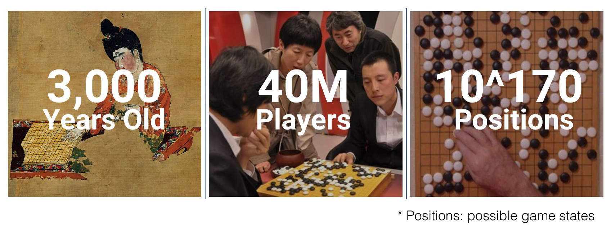
2. 바둑의 어려움 (Challenges of Go)
슬라이드는 바둑이 강화학습 문제로서 어려운 이유를 다섯 가지로 정리합니다 (출처: Silver et al., Mastering the game of Go with deep neural networks and tree search, Nature 2016).
| 어려움 | 슬라이드의 수치 | 강화학습에서 무엇이 어려운가 |
|---|---|---|
| 큰 상태 공간 | \(10^{170}\)개의 국면 | 국면마다 값을 저장하는 표 형식 방법은 불가능하고, 처음 보는 국면으로 일반화하는 함수 근사가 필요합니다 (12–13절) |
| 큰 행동 공간 | \(19 \times 19\)개의 가능한 행동 | 한 상태에서 뻗어 나가는 가지, 곧 분기 계수(branching factor)가 최대 361개입니다 |
| 긴 에피소드 | 약 250수 | 게임 트리의 깊이가 250에 이릅니다 |
| 희소 보상 | 이기면 +1, 지면 −1 | 보상이 게임이 끝날 때 한 번만 주어지므로, 250수 가운데 어느 수가 승패를 갈랐는지 알 수 없습니다 |
| 시간 제약 | 한 수에 몇 분 | 계획은 정해진 시간 예산 안에 끝나야 합니다 |
2.1 게임 트리의 크기
분기 계수가 \(b\)이고 깊이가 \(d\)인 트리의 잎 개수는 \(b^d\)입니다. 슬라이드의 수치를 그대로 넣으면
\[ 361^{250} = 10^{250 \log_{10} 361} \approx 10^{250 \times 2.558} \approx 10^{639} \]
입니다. 실제로는 돌이 놓일수록 빈 점이 줄어 분기 계수가 작아지므로 이것은 상한일 뿐이지만, 어떤 컴퓨터로도 끝까지 펼칠 수 없다는 결론은 바뀌지 않습니다. 10회차 7절의 무차별 대입 계획에서 본 \(O(N^H)\)에 \(N = 361\), \(H = 250\)을 넣은 것과 같습니다.
2.2 희소 보상과 가치의 의미
희소 보상은 이후 모든 절에서 쓰이는 중요한 사실 하나를 줍니다. 게임이 시점 \(T\)에 끝난다고 하고, 마지막 보상을 \(z \in \{+1, -1\}\), 나머지 보상을 모두 0이라 합시다. 할인 없이(\(\gamma = 1\)) 시점 \(t\)부터의 반환값을 계산하면
\[ G_t = \sum_{k=t}^{T} r_k = 0 + 0 + \cdots + z = z \]
입니다. 한 판 안의 모든 수가 같은 반환값 \(z\)를 받습니다. 그러면 상태 \(s\)의 가치는 승패의 기댓값이고, 무승부가 없다고 하면
\[ V^\pi(s) = \mathbb{E}_\pi[\, z \mid s_t = s \,] = (+1) \cdot P(\text{승}) + (-1) \cdot P(\text{패}) = 2\, P(\text{승} \mid s) - 1 \]
이 됩니다. 가치는 −1과 1 사이의 값이고 승률을 단조 변환한 것일 뿐입니다. 가치 0은 승률 50%, 가치 0.9는 승률 95%입니다. 그래서 이 강의의 슬라이드는 “가치”, “기대 반환값”, “승률(winning rate)”, “기대 결과(win/lose)”를 사실상 같은 뜻으로 번갈아 씁니다. 두 사람이 번갈아 두는 게임이므로 \(z\)는 그 시점에 둘 차례인 쪽의 관점에서 잰 결과이고, 상대의 관점에서 같은 국면의 가치는 \(-V\)입니다.
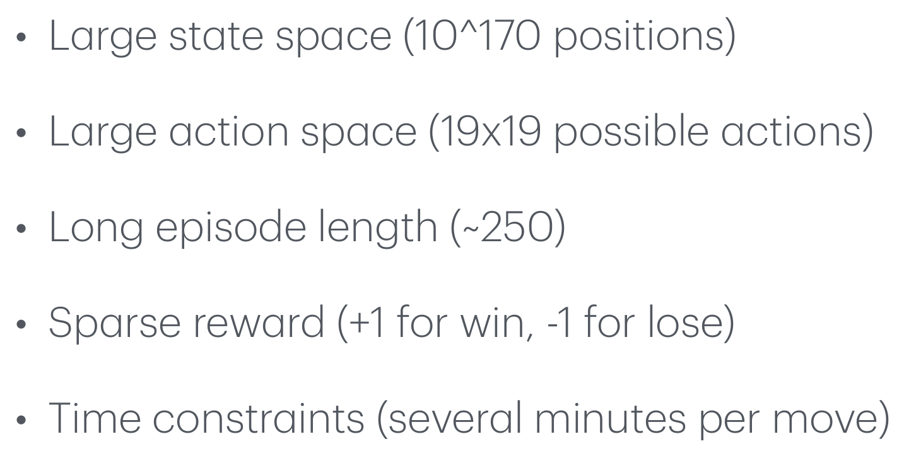
3. 무차별 대입 트리 탐색 (Brute-Force Tree Search (Planning))
가장 단순한 계획은 모든 행동을 게임을 시뮬레이션해서 평가하는 것(Evaluate every action by simulating games)입니다. 10회차 7절의 무차별 대입 계획과 같은 그림입니다.
- 현재 상태(주황 원)에서 둘 수 있는 수마다 자식 노드가 생기고, 그 아래로 다시 상대의 수, 나의 수가 번갈아 펼쳐집니다.
- 각 자식의 값은 그 아래를 모두 시뮬레이션해 얻습니다. 그림에서는 왼쪽 수가 \(r = -0.3\), 오른쪽 수가 \(r = 0.9\)이므로 오른쪽 수(주황 화살표와 주황 상자)를 둡니다.
슬라이드 오른쪽 위의 주황 글씨가 이 방법이 가능한 이유를 말합니다.
We can do this because we have a perfect model! (완벽한 모형이 있으니까 이렇게 할 수 있다!)
10회차 4절에서 “모형을 안다면” 실제로 행동하기 전에 결과를 상상해 볼 수 있다고 했습니다. 바둑에서는 규칙이 곧 모형입니다. 반상과 착점이 주어지면 다음 반상(따낸 돌의 제거까지 포함)이 오차 없이 정해집니다. 10–11회차의 학습된 모형이 지평을 따라 오차를 쌓아 짧은 계획에 묶였던 것과 달리, 여기서는 모형 오차가 0입니다. 계획의 어려움은 전부 계산량에서 옵니다.
그리고 그 계산량이 문제입니다. 슬라이드 아래의 상자는 무차별 대입 탐색이 다루기 불가능(intractable)한 이유를 두 가지로 적습니다.
- 탐색 공간이 거대하다. 2.1절의 \(10^{639}\)입니다.
- 컴퓨터가 누가 이기고 있는지 평가할 수 없다. 중간 국면을 보고 “이 국면이면 이긴다”고 판정하는 평가 함수가 없다는 뜻입니다. 평가 함수가 있으면 트리를 중간 깊이에서 끊고 그 값을 쓰면 되지만, 없으면 게임이 끝나는 깊이 250까지 내려가야만 \(r\)을 알 수 있습니다.
이 두 문제가 이번 강의의 뼈대입니다. 첫째 문제는 표본 추출(4–5절)과 정책망으로 너비를 줄이기(8절)로, 둘째 문제는 가치망으로 깊이를 줄이기(7절)로 해결됩니다. 11.2절의 슬라이드가 가치망을 “최초의 강력한 국면 평가 함수”라고 부르는 것은 바로 둘째 문제에 대한 답이기 때문입니다.
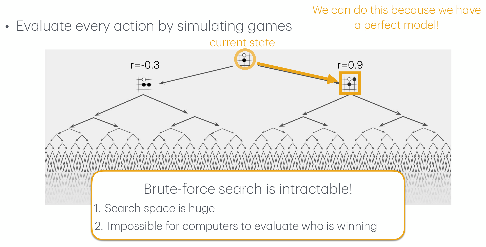
4. 순수 몬테카를로 트리 탐색 (Pure Monte Carlo Tree Search (MCTS))
트리를 전부 펼칠 수 없다면, 표본 추출로 전수 탐색을 근사(Approximate exhaustive tree search with sampling)할 수 있습니다. 슬라이드의 세 줄입니다.
- 예산: 게임 전체를 끝까지 무작위로 두는 시뮬레이션 \(N\)번
- 추정 점수(곧 승률)가 가장 좋은 쪽으로 이어지는 행동을 고른다
- 효율적인 탐색을 위해 휴리스틱을 더 넣고 싶다!
그림의 주사위가 “무작위로 고른다”는 뜻입니다. 뿌리에서 한 수를 고른 뒤, 그 아래로 양쪽의 수를 매번 주사위로 골라 게임이 끝날 때까지 내려갑니다. 아래로 갈수록 주사위가 작아지는 한 줄기 경로가 시뮬레이션 한 판입니다. 회색으로 흐리게 남은 나머지 트리는 이번 판에서 가지 않은 수들입니다.
4.1 몬테카를로 추정과 그 한계
뿌리의 수 \(a\) 하나에 대해 시뮬레이션을 \(n_a\)판 하고, \(i\)번째 판의 결과를 이기면 \(w_i = 1\), 지면 \(w_i = 0\)이라 합시다. 수 \(a\)의 승률 추정치는 표본 평균입니다.
\[ \hat{p}(a) = \frac{1}{n_a} \sum_{i=1}^{n_a} w_i \]
큰수의 법칙에 따라 \(\hat{p}(a)\)는 “\(a\)를 둔 뒤 양쪽이 무작위로 둘 때의 승률” \(p(a)\)로 수렴합니다. 정확도는 표준오차로 잽니다. \(w_i\)는 성공 확률 \(p(a)\)의 베르누이 변수이므로 분산이 \(p(1-p)\)이고, \(p(1-p) \le 1/4\)이므로
\[ \mathrm{SE}\big(\hat{p}(a)\big) = \sqrt{\frac{p(a)\,\big(1 - p(a)\big)}{n_a}} \le \frac{1}{2\sqrt{n_a}} \]
입니다. 예산 \(N\)을 361개의 수에 고르게 나누면 \(n_a = N/361\)입니다. \(N = 36{,}100\)판이면 수마다 100판이고 표준오차가 최대 0.05입니다. 표준오차를 0.01까지 줄이려면 수마다 2,500판, 뿌리에서만 \(N = 902{,}500\)판이 필요합니다.
이 계산은 순수 MCTS의 두 가지 약점을 드러냅니다.
- 예산을 고르게 쓴다. 누가 봐도 나쁜 수에도 좋은 수와 같은 수의 시뮬레이션을 씁니다. 나쁜 수의 승률은 대충만 알아도 되는데 말입니다. → 5절(시뮬레이션 결과에 따라 예산을 몰아 주기)과 8절(정책망으로 처음부터 유망한 수 고르기)
- 무작위 대국의 승률을 잰다. 우리가 알고 싶은 것은 좋은 수를 두는 상대와 겨룰 때의 승률인데, 주사위로 두는 대국에서는 상대가 실수해야만 이기는 수도 좋아 보일 수 있습니다. → 10.3절(무작위 대신 빠른 기본 정책)과 7절(가치망)
슬라이드 마지막 줄의 “휴리스틱을 더 넣고 싶다”는 이 두 약점을 메울 장치를 가리키는 것으로 읽히고, 이후의 절들이 그 장치를 하나씩 도입합니다.
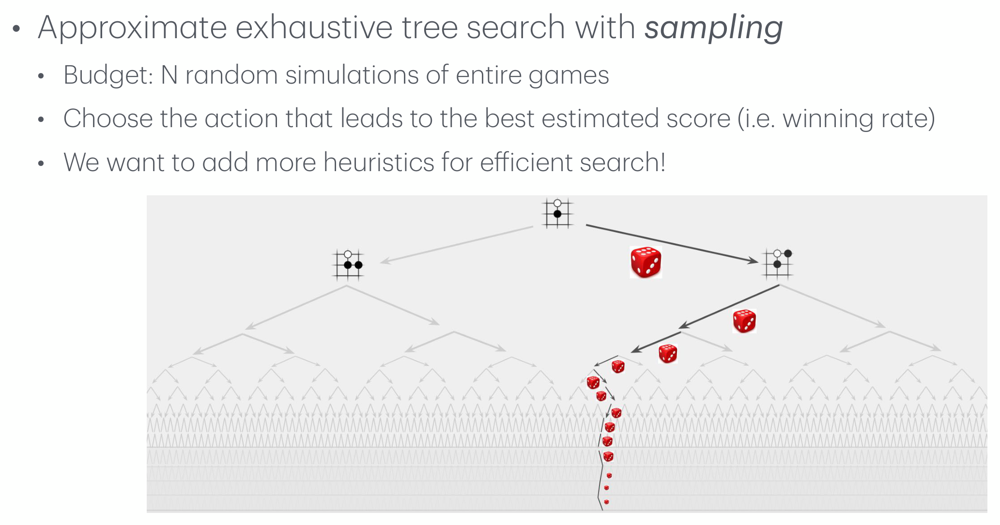
5. 몬테카를로 트리 탐색 (Monte Carlo Tree Search (MCTS))
5.1 제한된 예산 안에서 무엇을 평가할 것인가
같은 그림을 두고, 슬라이드는 불릿만 바꾸어 “순수”라는 말을 뗀 MCTS를 정의합니다.
- 게임 전체를 여러 번 시뮬레이션해 가치(기대 반환값)를 추정한다. 2.2절에서 보았듯 바둑에서 기대 반환값은 승패의 기댓값이므로 승률 추정과 같은 말입니다.
- 시도 예산이 제한되어 있으므로(a limited budget of trials), 어떤 상태와 행동을 평가할지 현명하게 골라야 한다.
- 매 시도가 끝날 때마다 정책을 조정해, 더 좋은 행동이 더 자주 선택되게 한다.
4절과의 차이는 세 번째 줄에 있습니다. 순수 MCTS는 무작위 정책으로 고정된 채 예산을 고르게 쓰지만, MCTS는 시뮬레이션 결과를 보고 다음 시뮬레이션에서 트리 안의 수를 고르는 방식을 바꿉니다. 그러면 좋아 보이는 가지에 시뮬레이션이 몰리고, 트리는 그쪽으로 더 깊게 자랍니다.
동시에 긴장도 생깁니다. 지금까지 좋아 보인 수만 계속 고르면(활용) 몇 판의 운으로 낮게 평가된 좋은 수를 다시 볼 기회가 없고, 덜 본 수를 자꾸 고르면(탐험) 예산을 낭비합니다. 이 균형을 구체적으로 어떻게 잡는지는 5.2절의 예시와 8.2절의 공식이 보여 줍니다.
6–7회차는 exploration을 “탐색”으로 옮겼지만, 이번 회차에서는 search(트리 탐색)가 주인공이라 두 말이 부딪힙니다. 이 포스트에서는 search를 탐색, exploration을 탐험, exploitation을 활용으로 구분해 씁니다. 11회차의 “탐험 잡음”과 같은 선택입니다.
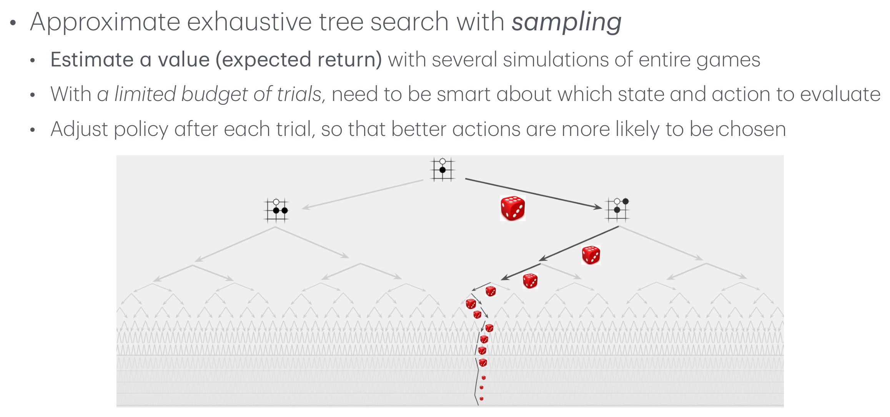
5.2 MCTS 롤아웃 예시 (Example MCTS Rollout)
MCTS의 한 번의 반복을 숫자로 따라가 보겠습니다. 상황은 흑의 차례이고, 지금까지 21판을 시뮬레이션했다는 것입니다.
노드 표기 읽기. 각 노드의 \(w/n\)은 “그 노드를 지나간 시뮬레이션 \(n\)판 중 그 노드로 이어지는 수를 둔 쪽이 이긴 판 \(w\)”입니다.
- 뿌리 11/21은 “백이 21판 중 11판을 이겼다”입니다. 뿌리는 백이 방금 둔 뒤의 국면이므로 백의 관점에서 셉니다.
- 회색 노드는 흑의 수, 흰 노드는 백의 수입니다. 뿌리의 세 자식(7/10, 0/3, 3/8)이 흑이 둘 수 있는 세 수이고, 7/10은 “흑이 10판 중 7판을 이겼다”입니다.
관점이 층마다 바뀌므로 숫자 사이에 맞아떨어지는 관계가 있습니다. 이 그림은 부모를 지난 판이 모두 그려진 자식 가운데 하나를 지나도록 그려져 있으므로(아래 표의 마지막 열: 자식 방문의 합 = 부모의 방문 수), 한 판은 정확히 한쪽만 이긴다는 사실에서 자식들(상대의 관점)이 이긴 판의 합은 부모가 진 판의 수와 같아집니다. 그림에서 자식이 그려진 노드를 모두 확인해 보면 다음과 같습니다.
| 노드 | 그 수를 둔 쪽 | 자식 | 자식이 이긴 판의 합 | 부모가 진 판 | 자식 방문의 합 |
|---|---|---|---|---|---|
| 뿌리 11/21 | 백 | 7/10, 0/3, 3/8 | \(7 + 0 + 3 = 10\) | \(21 - 11 = 10\) | \(10 + 3 + 8 = 21\) |
| 7/10 | 흑 | 2/4, 1/6 | \(2 + 1 = 3\) | \(10 - 7 = 3\) | \(4 + 6 = 10\) |
| 1/6 | 백 | 2/3, 3/3 | \(2 + 3 = 5\) | \(6 - 1 = 5\) | \(3 + 3 = 6\) |
| 3/8 | 흑 | 1/2, 2/3, 2/3 | \(1 + 2 + 2 = 5\) | \(8 - 3 = 5\) | \(2 + 3 + 3 = 8\) |
실제 MCTS에서는 노드를 처음 확장한 판이 그 노드의 자식을 지나지 않으므로, 이 관계가 한 판씩 어긋날 수 있습니다. 위의 관계는 이 예시 그림의 숫자를 읽는 확인용입니다.
선택(Selection). 슬라이드의 주황 상자는 “탐색은 (이긴 판 / 롤아웃 수)가 가장 큰 행동을 따라가거나, 탐험한다”이고, 그 위의 주황 글씨는 “다른 전략도 통한다”입니다. 그림의 경로(굵은 화살표)를 그 기준으로 읽어 봅니다.
- 뿌리(흑이 고름): 7/10 = 0.70, 0/3 = 0, 3/8 ≈ 0.38 → 가장 큰 7/10으로 갑니다.
- 7/10 노드(백이 고름): 2/4 = 0.50, 1/6 ≈ 0.17 → 그림은 1/6으로 갑니다. 비율이 가장 큰 수가 아니므로, 이것이 “또는 탐험한다”에 해당하는 선택입니다.
- 1/6 노드(흑이 고름): 2/3 ≈ 0.67, 3/3 = 1.00 → 가장 큰 3/3으로 갑니다.
확장(Expansion). 3/3 아래에 아직 트리에 없던 백의 수 하나를 새 노드 0/0으로 붙입니다.
시뮬레이션(Simulation). 새 노드에서 게임이 끝날 때까지 둡니다(점선 화살표). 결과는 “백이 졌고, 흑이 이겼다”이고, 새 노드는 백의 수이므로 이 판의 결과는 0/1입니다.
역전파(Backpropagation). 경로 위의 모든 노드에 판 수 1을 더하고, 이긴 쪽(흑)의 노드에만 승 1을 더합니다.
| 노드 | 그 수를 둔 쪽 | 전 | 더하는 값 | 후 |
|---|---|---|---|---|
| 새 노드 | 백 | 0/0 | +0/1 | 0/1 |
| 3/3 | 흑 | 3/3 | +1/1 | 4/4 |
| 1/6 | 백 | 1/6 | +0/1 | 1/7 |
| 7/10 | 흑 | 7/10 | +1/1 | 8/11 |
| 뿌리 | 백 | 11/21 | +0/1 | 11/22 |
갱신 뒤에도 위 표의 네 노드에서는 두 관계가 그대로 성립합니다. 뿌리의 자식들이 이긴 판의 합은 \(8 + 0 + 3 = 11\)이고, 뿌리가 진 판은 \(22 - 11 = 11\)입니다.
이 예시의 선택 규칙은 특정 공식을 따르지 않습니다. 슬라이드가 “다른 전략도 통한다”고 덧붙인 것처럼, 비율을 쓸지 탐험을 얼마나 섞을지는 설계의 선택이고, AlphaGo가 실제로 쓰는 규칙은 8.2절에서 나옵니다.
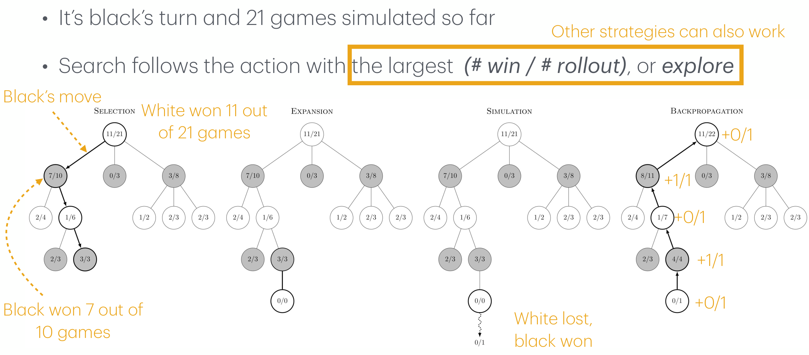
5.3 탐색 트리를 반복해서 키우기
5.2절의 한 번의 반복을 일반화하면 MCTS의 정의가 됩니다 (출처: Browne et al., A Survey of Monte Carlo Tree Search Methods, IEEE Transactions on Computational Intelligence and AI in Game 2012 · Silver et al., Nature 2016).
- 현재 상태에서 출발해 탐색 트리를 반복적으로 키운다.
- 각 노드는 하나의 상태와 그 가치(예: 승률)를 나타낸다.
- \(N\)번 반복한 뒤에는 가장 자주 방문한 행동을 고른다!
한 번의 반복은 선택 → 확장 → 시뮬레이션 → 역전파이고, 그림의 둥근 사각형 화살표가 역전파에서 다시 선택으로 돌아가는 반복을 나타냅니다. 이 네 단계에는 두 개의 정책이 쓰입니다.
| 트리 정책(tree policy) | 기본 정책(default policy) | |
|---|---|---|
| 쓰이는 단계 | 선택·확장 (트리 안) | 시뮬레이션 (트리 밖, 게임 끝까지) |
| 슬라이드의 설명 | 강화학습 정책 — 더 좋지만 느리다 | 빠른 시뮬레이션용 정책 — 덜 좋지만 빠르다 |
| 한 번의 반복에서 호출 횟수 | 트리의 깊이만큼 | 게임이 끝날 때까지 남은 수만큼 |
| AlphaGo에서 | \(p_\sigma\) (8.2절) | \(p_\pi\) (7.2절, 10.3절) |
느린 정책을 트리 안에서만 쓰는 이유는 호출 횟수에 있습니다. 트리는 반복마다 노드 하나씩만 자라므로 트리 안의 경로는 짧고, 게임 끝까지의 나머지 수백 수는 빠른 정책이 맡습니다. 시뮬레이션이 끝나면 게임 끝에서 보상(그림의 삼각형)을 받고, 그 값이 경로를 거슬러 올라갑니다.
왜 Q가 가장 큰 수가 아니라 가장 많이 방문한 수를 고르는가? 슬라이드는 이유를 적지 않지만, 트리 정책이 좋은 수에 방문을 몰아 주도록 설계되어 있다는 점을 생각하면 방문 횟수는 “좋아 보였다”와 “그 판단을 여러 번 확인했다”를 함께 담은 통계로 읽을 수 있습니다. 방문이 적은 수의 높은 Q는 몇 판의 운일 수 있습니다.
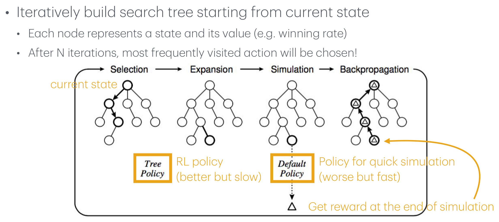
5.4 선택 (Selection)
- (느린) 트리 정책으로 트리를 따라 내려간다.
- 새 노드를 확장해야 할 때까지 움직인다.
뿌리(주황 원)에서 출발해 트리 정책이 고르는 자식으로 한 칸씩 내려가다가, 고른 수가 아직 트리에 없는 노드로 이어지는 지점(주황 상자)에서 멈춥니다. 5.2절에서 뿌리 → 7/10 → 1/6 → 3/3으로 내려간 것이 이 단계입니다.
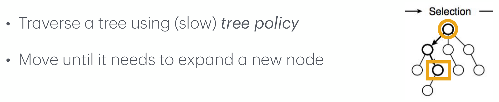
5.5 확장 (Expansion)
- 자식 노드 하나를 확장한다.
- 곧, 모형으로 행동 하나를 시뮬레이션한다.
- 곧, 그 노드의 가치를 추정하기 시작한다.
선택이 멈춘 노드에서 수 하나를 골라, 바둑 규칙(모형)으로 그 수를 둔 뒤의 반상을 계산하고 새 노드로 붙입니다. 이 새 노드를 슬라이드는 잎(leaf) \(s_L\)로 표시하며, 7.2절의 식에서 이 기호가 다시 쓰입니다. 반복마다 노드가 하나씩 늘어나므로, \(N\)번 반복한 트리에는 뿌리 말고 많아야 \(N\)개의 노드가 있습니다. 트리가 거대한 게임 트리 전체가 아니라 실제로 시뮬레이션한 부분만 담는다는 점이 MCTS를 메모리 안에 붙잡아 둡니다.
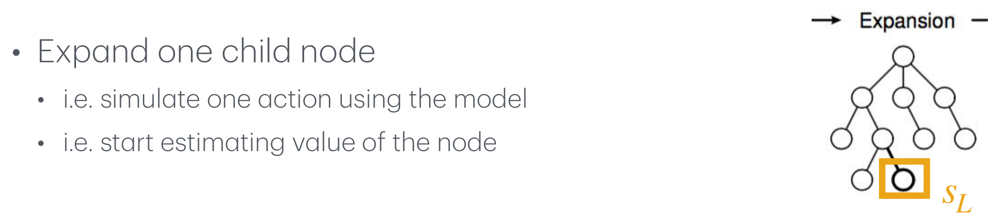
5.6 시뮬레이션 (Simulation)
- (빠른) 기본 정책으로 시뮬레이션을 돌린다.
- 보상 +1(승) 또는 −1(패)을 받는다.
5.2절의 승패 개수와 여기의 \(\pm 1\) 보상은 같은 정보입니다. 이기면 \(w = 1\), 지면 \(w = 0\)인 표기와 \(z = 2w - 1\)로 일대일 대응하고, 평균을 내면 2.2절의 관계 “가치 = 2 × 승률 − 1”이 됩니다.
슬라이드 아래의 상자가 왜 이 단계에 빠른 정책을 쓰는지를 숫자로 보여 줍니다.
\[ \begin{aligned} \text{트리 정책:}&\quad 1\ \text{ms} \times 250\ \text{수} = 0.25\ \text{초} \\ \text{기본 정책:}&\quad 1\ \mu\text{s} \times 250\ \text{수} = 0.25\ \text{ms} \end{aligned} \]
시뮬레이션 한 판은 게임 끝까지 약 250수이므로 비용은 “수당 시간 × 250”입니다. 두 정책의 속도 차이 1,000배가 그대로 시뮬레이션 횟수의 차이가 됩니다. 2절의 시간 제약에 맞춰 한 수에 1분을 쓴다고 하면,
- 트리 정책으로만 두면 \(60 / 0.25 = 240\)판,
- 기본 정책으로 두면 \(60 / 0.00025 = 240{,}000\)판
을 시뮬레이션할 수 있습니다. 4.1절의 표준오차가 \(1/\sqrt{n}\)에 비례하므로, 같은 시간에 표준오차를 \(\sqrt{1000} \approx 31.6\)배 줄이는 셈입니다. 대가는 정책의 질입니다. 기본 정책이 엉성할수록 시뮬레이션의 승률은 “엉성한 두 사람의 대국”의 승률이 되어 참값과 멀어집니다. 7.2절에서 가치망을 롤아웃과 섞는 것은 이 오차를 덜어 주는 장치로도 읽힙니다.
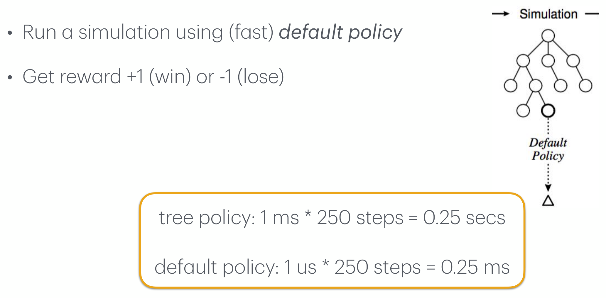
5.7 역전파 (Back Up)
- 각 노드의 가치를 갱신한다 (예: 이긴 판 / 롤아웃 수).
- 각 간선의 행동 가치 \(Q\)와 방문 횟수 \(N\)을 갱신한다.
\[ N(s, a) = \sum_{i=1}^{n} \mathbf{1}(s, a, i) \]
\[ Q(s, a) = \frac{1}{N(s, a)} \sum_{i=1}^{n} \mathbf{1}(s, a, i)\, r_i \]
여기서 \(\mathbf{1}(s, a, i)\)는 \(i\)번째 시뮬레이션에서 간선 \((s, a)\)를 지나갔는지(지나갔으면 1, 아니면 0), \(r_i\)는 \(i\)번째 시뮬레이션의 보상, \(n\)은 지금까지의 시뮬레이션 수입니다. \(N(s,a)\)는 \((s,a)\)를 지나간 시뮬레이션의 수이고, \(Q(s,a)\)는 그 시뮬레이션들의 보상 평균입니다. 5.2절의 노드 표기 \(w/n\)과 비교하면, 상태 \(s\)에서 수 \(a\)로 이어지는 자식 노드가 \(w_a/n_a\)일 때 \(N(s,a) = n_a\)이고 \(Q(s,a) = 2(w_a/n_a) - 1\)입니다. 두 사람이 번갈아 두는 게임이므로, 5.2절의 표기처럼 \(r_i\)는 \(s\)에서 둘 차례인 쪽의 관점에서 잰 값입니다.
증분 갱신의 유도. 위 식을 그대로 계산하려면 모든 시뮬레이션의 기록이 필요할 것 같지만, 간선마다 \(N\)과 \(Q\) 두 숫자만 있으면 됩니다.
1단계. \(i\)번째 시뮬레이션 직전의 값을 \(N_{\text{old}}\), \(Q_{\text{old}}\)라 하면, 지금까지 이 간선이 받은 보상의 합은 \(N_{\text{old}}\, Q_{\text{old}}\)입니다.
2단계. \(i\)번째 시뮬레이션이 \((s, a)\)를 지나며 보상 \(r\)을 얻었다면, 횟수는 \(N_{\text{new}} = N_{\text{old}} + 1\), 보상의 합은 \(N_{\text{old}}\, Q_{\text{old}} + r\)이 됩니다.
3단계. 새 평균을 정리하면
\[ Q_{\text{new}} = \frac{N_{\text{old}}\, Q_{\text{old}} + r}{N_{\text{old}} + 1} = Q_{\text{old}} + \frac{1}{N_{\text{old}} + 1}\big(r - Q_{\text{old}}\big) \]
입니다. “예측과 표적의 차이만큼 조금 옮긴다”는 11회차 3.1절의 Q 갱신 \(Q \leftarrow Q + \alpha(\text{표적} - Q)\)와 같은 꼴이고, 학습률 \(\alpha\) 자리에 \(1/N\)이 들어가 있어 결과가 정확히 표본 평균이 됩니다. 역전파는 경로 위의 간선마다 이 두 줄의 계산만 하면 됩니다.
슬라이드는 시뮬레이션 예산(5.8절의 “\(N\)번 반복”)과 방문 횟수 함수 \(N(s, a)\)에 같은 글자를 씁니다. 함수 인자가 붙어 있으면 방문 횟수, 홀로 쓰이면 예산입니다. 지금까지의 시뮬레이션 수는 \(n\)으로 따로 적습니다. 뿌리에서는 모든 시뮬레이션이 뿌리를 지나므로 \(\sum_a N(s_{\text{root}}, a) = n\)이고, 탐색이 끝나면 \(n = N\)입니다.
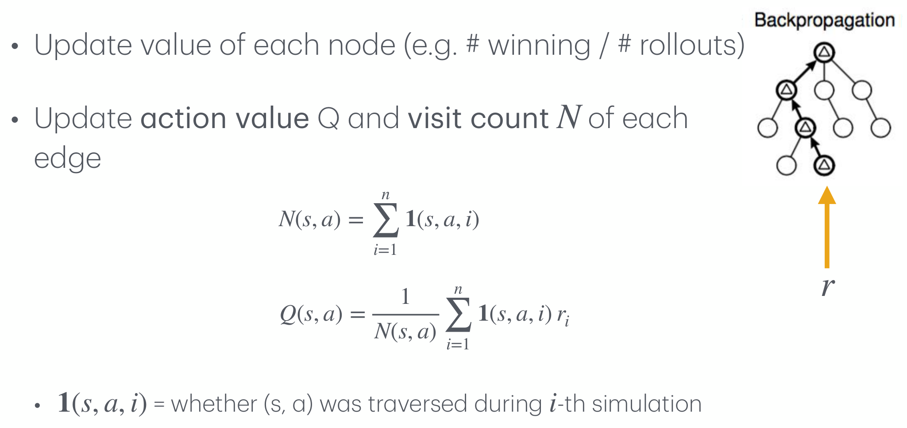
5.8 전체 알고리즘
네 단계를 묶으면 다음과 같습니다.
- 현재 상태만 있는 트리에서 시작한다.
- 게임 전체를 시뮬레이션할 예산 \(N\)을 정한다.
- 다음을 \(N\)번 반복한다.
- 선택: 현재 상태(뿌리)에서 출발해 트리 정책을 따른다.
- 확장: 트리에 없는 새 상태를 방문하면 트리를 확장한다.
- 시뮬레이션: 새 상태를 기본 정책으로 평가한다.
- 역전파: 지나간 간선의 방문 횟수 \(N(s, a)\)와 가치 \(Q(s, a)\)를 갱신한다.
- \(N\)번 반복한 뒤, 가장 자주 방문한 행동을 고른다: \(a^\star = \arg\max_a N(s_{\text{root}}, a)\).
이 탐색은 한 수를 두기 위해 실행됩니다. 수를 둔 뒤 상대가 응수하면, 새 현재 상태에서 같은 절차를 다시 시작합니다. 10회차 16절의 “계획하고 다시 계획하기(MPC)”와 같은 구조로, 매 시점 앞을 내다보고 첫 행동만 실행합니다.
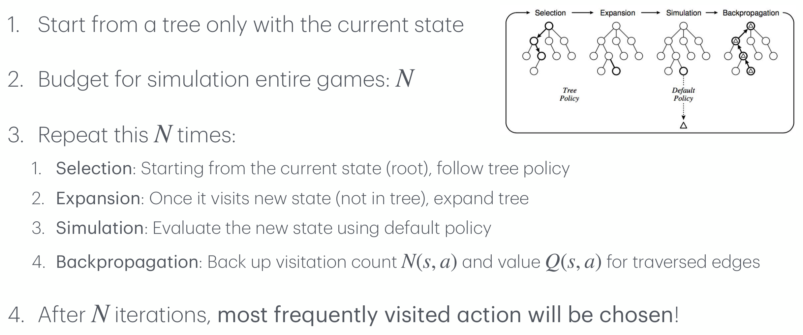
6. 효율적인 MCTS (Efficient MCTS)
5절의 MCTS는 4절의 순수 MCTS보다 예산을 영리하게 쓰지만, 여전히 3절의 두 문제를 안고 있습니다. 트리 정책이 무엇을 근거로 “좋은 수”를 고르는지가 정해지지 않았고, 시뮬레이션은 여전히 게임 끝까지 가야만 결과를 얻습니다. 슬라이드의 답은 그럴듯한 상태만 탐색하는 것(Only search plausible states)이며, 두 방향으로 줄입니다.
| 줄이는 것 | 방법 | 해결하는 3절의 문제 | 도구 |
|---|---|---|---|
| 깊이 | 시뮬레이션 없이 기대 결과(승/패)를 추정한다 | ② 누가 이기고 있는지 평가할 수 없다 | 가치망 (7절) |
| 너비 | 나쁜 행동을 제외한다 | ① 탐색 공간이 거대하다 | 정책망 (8절) |
2.1절의 트리 크기 \(b^d\)에 대입하면, 너비를 줄이는 것은 분기 계수 \(b\)를 유효 분기 계수 \(b' < b\)로, 깊이를 줄이는 것은 \(d\)를 \(d' < d\)로 바꾸는 것입니다. 지수 \(d\)가 줄어드는 효과는 \(b\)가 줄어드는 효과와 곱해지므로, 둘을 함께 줄이면 \(b^d\)에서 \(b'^{\,d'}\)로 탐색 공간이 극적으로 작아집니다.
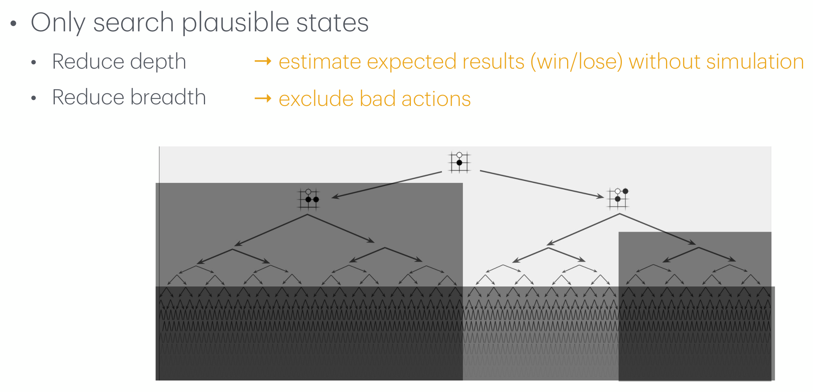
7. 가치망으로 깊이 줄이기 (Reduce Depth with Value Network)
7.1 트리를 중간에서 끊는다
첫 번째 슬라이드는 그림 한 장과 문장 하나입니다.
Use value network to approximate expected reward (가치망으로 기대 보상을 근사한다)
위쪽 트리는 게임 끝까지 내려가야 하는 원래의 트리이고, 아래쪽 트리는 몇 단계 아래에서 끊긴 트리입니다. 끊긴 자리의 잎마다 놓인 분홍색 신경망 그림이 가치망(value network) \(v_\theta(s)\)입니다. 가치망이 국면을 보고 2.2절의 기대 결과 \(\mathbb{E}[z \mid s]\)를 바로 내놓을 수 있다면, 그 아래의 수백 수를 시뮬레이션할 필요가 없습니다. 3절의 둘째 문제, “누가 이기고 있는지 평가할 수 없다”를 학습으로 해결하는 것입니다. 이 가치망을 어떻게 학습하는지는 11.2절에서 다룹니다.
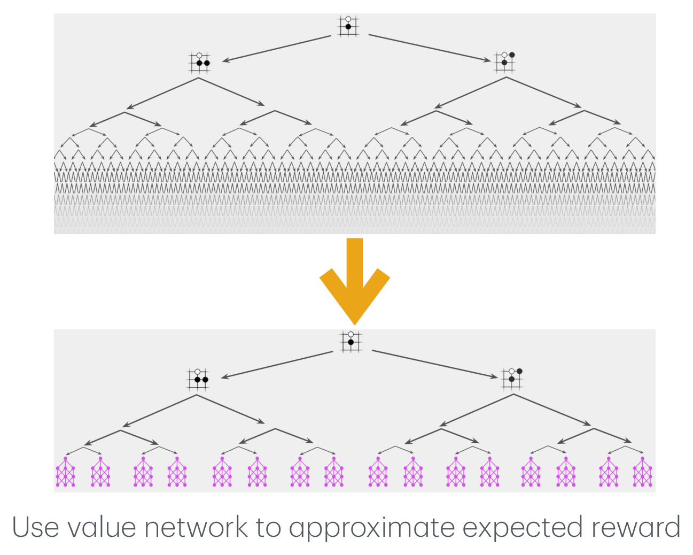
7.2 가치망과 롤아웃을 섞어 평가하기
두 번째 슬라이드는 이를 식으로 적습니다. 불릿은 “상태를 효율적으로 평가한다”(Evaluate a state efficiently)입니다.
\[ V(s_L) = (1 - \lambda)\, v_\theta(s_L) + \lambda\, r \]
\[ Q(s, a) = \frac{1}{N(s, a)} \sum_{i=1}^{n} \mathbf{1}(s, a, i)\, V(s_L^{\,i}) \]
- \(s_L\): 확장 단계에서 새로 붙은 잎 상태(5.5절), \(s_L^{\,i}\): \(i\)번째 시뮬레이션의 잎 상태
- \(v_\theta(s_L)\): 가치망이 잎을 보고 내놓는 가치 추정(그림의 “Value estimation”)
- \(r\): 잎에서 빠른 롤아웃 정책 \(p_\pi\)로 게임 끝까지 둔 롤아웃 한 판의 결과(그림의 점선 화살표 \(\sim p_\pi\)와 “Outcome \(r\) from a rollout”)
- \(\lambda \in [0, 1]\): 두 평가를 섞는 비율
둘째 식은 5.7절의 \(Q\) 식에서 보상 \(r_i\)를 섞인 평가 \(V(s_L^{\,i})\)로 바꾼 것일 뿐입니다. \(\lambda\)의 양 끝을 보면 의미가 분명해집니다.
- \(\lambda = 1\): \(V(s_L) = r\)이 되어 5.7절의 MCTS, 곧 롤아웃만으로 평가하는 경우로 돌아갑니다.
- \(\lambda = 0\): \(V(s_L) = v_\theta(s_L)\)이 되어 롤아웃 없이 가치망만으로 평가합니다. 19절의 AlphaGo Zero가 바로 이 경우입니다.
왜 섞는가. 두 평가는 같은 양(잎에서의 기대 결과)을 서로 다른 방식으로 틀립니다.
- 롤아웃 결과 \(r\)은 표본 하나입니다. 값이 \(\pm 1\)뿐이므로 평균이 \(\mu\)일 때 분산은 \(\mathbb{E}[r^2] - \mu^2 = 1 - \mu^2\)입니다. 승부가 팽팽한 국면(\(\mu \approx 0\))에서는 분산이 1에 가까워, 한 판의 결과가 거의 동전 던지기입니다. 게다가 그 평균은 엉성한 \(p_\pi\)끼리 둔 대국의 결과입니다(5.6절).
- 가치망 \(v_\theta(s_L)\)은 같은 국면에 대해 늘 같은 값을 내므로 표본 추출에서 오는 분산이 없습니다. 대신 근사 오차, 곧 편향이 있을 수 있습니다.
\(v_\theta\)를 결정적인 값으로 보면 \(\mathrm{Var}\big(V(s_L)\big) = \lambda^2\, (1 - \mu^2)\)이므로, \(\lambda\)를 줄일수록 분산은 줄고, 대신 \(V(s_L)\)에서 가치망의 편향이 차지하는 비중 \(1 - \lambda\)가 커집니다(롤아웃 쪽 편향의 비중 \(\lambda\)는 줄어듭니다). 섞는 비율은 이 편향–분산 사이의 선택이고, 슬라이드 아래의 상자가 결론을 적습니다 — “전수 탐색 없이 더 나은 가치 추정”(Better value estimation without exhaust search). 게다가 \(Q(s,a)\)는 이 평가를 \(N(s,a)\)번 평균하므로, 방문이 쌓일수록 남은 분산도 줄어듭니다.
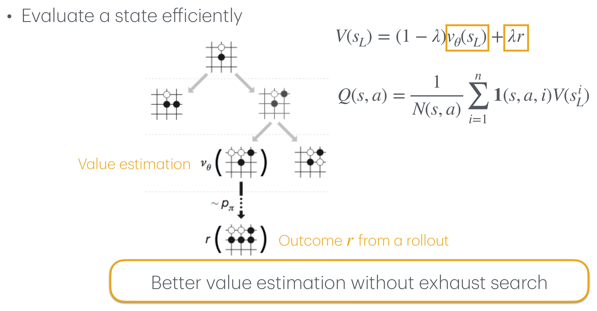
8. 정책망으로 너비 줄이기 (Reduce Breadth with Policy Network)
8.1 유망한 수만 따라간다
Only take actions with a higher expected return (기대 반환값이 더 높은 행동만 택한다)
그림에서 진한 경로 위의 노드들에 붙은 초록색 신경망이 정책망(policy network)입니다. 정책망이 각 국면에서 어떤 수가 유망한지 확률로 알려 주면, 탐색은 그 확률이 높은 몇 개의 가지만 진하게 따라가고(진한 화살표), 나머지 가지(흐린 화살표)와 오른쪽 수 아래 전체(흐린 회색)는 거의 들여다보지 않습니다. 361개의 후보를 모두 같은 무게로 보는 대신 소수에 집중하므로, 분기 계수 \(b\)가 실질적으로 작아집니다.
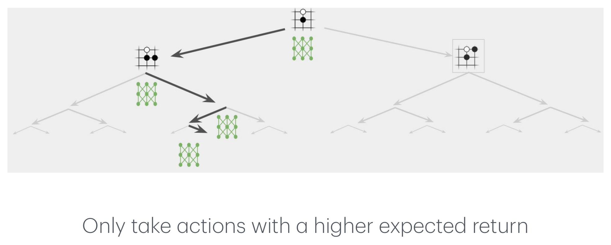
8.2 새 트리 정책
두 번째 슬라이드는 이를 5절의 트리 정책에 넣는 방법입니다. 불릿은 “정책에 따라 상태를 선택·확장한다”(Select/expand states based on policy)이고, 슬라이드는 이것을 새 트리 정책(New tree policy)이라 부릅니다.
\[ a_t = \arg\max_a \left( Q(s_t, a) + \frac{p_\sigma(a \mid s_t)}{1 + N(s_t, a)} \right) \]
- \(Q(s_t, a)\): 지금까지의 시뮬레이션으로 쌓은 행동 가치(7.2절)
- \(p_\sigma(a \mid s_t)\): 정책망이 주는 사전 확률(슬라이드의 주황 표시 “Tree policy”)
- \(N(s_t, a)\): 방문 횟수
슬라이드는 둘째 항의 인자를 \(s\)로 적었지만 첫째 항의 \(s_t\)와 같은 현재 노드의 상태입니다. 둘째 항을 보너스 \(u(s, a) = p_\sigma(a \mid s) / \big(1 + N(s, a)\big)\)라 부르고, 슬라이드의 세 불릿을 차례로 확인해 보겠습니다.
① 처음에는 정책망을 그대로 따른다. 처음에는 \(Q(s_t, a) = 0\), \(N(s_t, a) = 0\)이므로 점수는 \(0 + p_\sigma(a \mid s)/1 = p_\sigma(a \mid s)\)이고, \(a_t = \arg\max_a p_\sigma(a \mid s)\)입니다. 아무 시뮬레이션도 하지 않았을 때는 정책망이 가장 유망하다고 본 수를 고릅니다.
② 반복할수록 \(Q\)가 높고 \(N\)이 낮은 수를 따른다. 수 \(a\)를 \(k\)번 방문하면 보너스는 \(p_\sigma(a \mid s) / (1 + k)\)로 줄어듭니다. 같은 수를 계속 고르면 보너스가 깎여 다른 수에 차례가 돌아가고, 결국 남는 차이는 \(Q\)입니다.
③ \(Q\)는 활용을, \(N\)은 탐험을 부추긴다. \(Q\)가 높은 수는 점수가 높아 계속 선택되고(활용), 방문이 적은 수는 보너스가 덜 깎여 있어 다시 기회를 얻습니다(탐험).
사전 확률에 비례해 방문이 나뉜다. 모든 수의 \(Q\)가 같다고 하면 선택은 보너스만으로 정해집니다. 보너스가 가장 큰 수를 고르면 그 수의 보너스가 줄어드므로, 반복이 쌓이면 보너스들이 서로 비슷한 값으로 맞춰집니다.
\[ \frac{p_\sigma(a_1 \mid s)}{1 + N(s, a_1)} \approx \frac{p_\sigma(a_2 \mid s)}{1 + N(s, a_2)} \approx \cdots \quad \Longrightarrow \quad 1 + N(s, a) \propto p_\sigma(a \mid s) \]
예를 들어 사전 확률이 0.6, 0.3, 0.1인 세 수는 반복이 충분히 쌓이면 방문 횟수가 대략 6 : 3 : 1로 나뉩니다. 사전 확률이 0에 가까운 수는 보너스도 0에 가까워 거의 선택되지 않으므로, 361개의 후보 가운데 정책망이 유망하다고 본 몇 개에 탐색이 집중됩니다. 이것이 8.1절의 “너비 줄이기”를 수식으로 구현한 것입니다. 여기에 \(Q\)의 차이가 더해지면, 시뮬레이션 결과가 좋은 수일수록 보너스가 다른 수보다 그 차이만큼 작아질 때까지 더 많이 방문됩니다.
슬라이드 아래의 상자가 이 절의 결론입니다.
MCTS = Improving decision of tree policy with “search” (MCTS = “탐색”으로 트리 정책의 결정을 개선하는 것)
정책망 하나만 쓰면 결정은 \(\arg\max_a p_\sigma(a \mid s)\)입니다. MCTS는 그 사전 확률에서 출발해, 시뮬레이션으로 쌓은 \(Q\)로 결정을 고쳐 나갑니다. 탐색이 끝난 뒤의 방문 분포는 정책망의 원래 판단을 시뮬레이션 결과로 보정한 결과입니다.
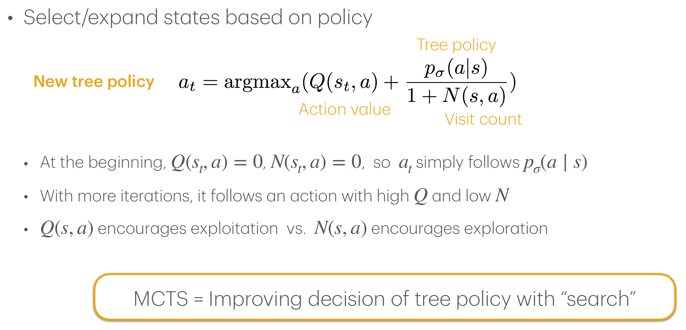
9. 테스트 시점 (Testing Time)
학습이 끝난 AlphaGo가 실제 대국에서 수를 두는 방식입니다.
- 여러 번 시뮬레이션한다 — 초당 1,000번
- 방문 횟수가 가장 큰 행동을 고른다
5.8절의 알고리즘에 7.2절의 평가와 8.2절의 트리 정책을 넣은 것이 테스트 시점의 AlphaGo입니다. 2절의 시간 제약대로 한 수에 1분을 쓴다면 \(1{,}000 \times 60 = 60{,}000\)번의 시뮬레이션을 할 수 있습니다. 5.6절의 어림, 곧 트리 정책만으로 게임 끝까지 두면 1분에 240판이라는 계산과 비교하면 250배입니다. 슬라이드는 이 속도를 어떻게 얻는지 밝히지 않습니다. 10.3절의 \(p_\sigma\)(수당 3 ms)를 시뮬레이션마다 한 번만 호출해도 하나씩 차례로 계산하면 초당 약 300번이 한계이므로, 초당 1,000번은 정책망 호출을 줄이거나 여러 계산을 병렬로 돌려야 나오는 수치로 읽힙니다.
그림은 탐색 트리를 시각화한 것입니다. 슬라이드는 설명을 달지 않지만, 왼쪽 끝 뿌리에서 수많은 가는 선이 부채꼴로 퍼지고 그중 한 줄기만 굵게 이어지는 모습은 대부분의 수가 몇 번만 시도되고 방문이 소수의 수에 몰린다는 8.2절의 결과로 읽힙니다. 빨간 상자는 그 굵은 줄기가 닿은 노드, 곧 방문 횟수가 가장 커서 실제로 둘 수를 표시하는 것으로 보입니다. 그 뒤로 이어지는 부채꼴들은 그 수 이후의 응수들에 대해서도 같은 집중이 일어난다는 것으로 읽을 수 있습니다.
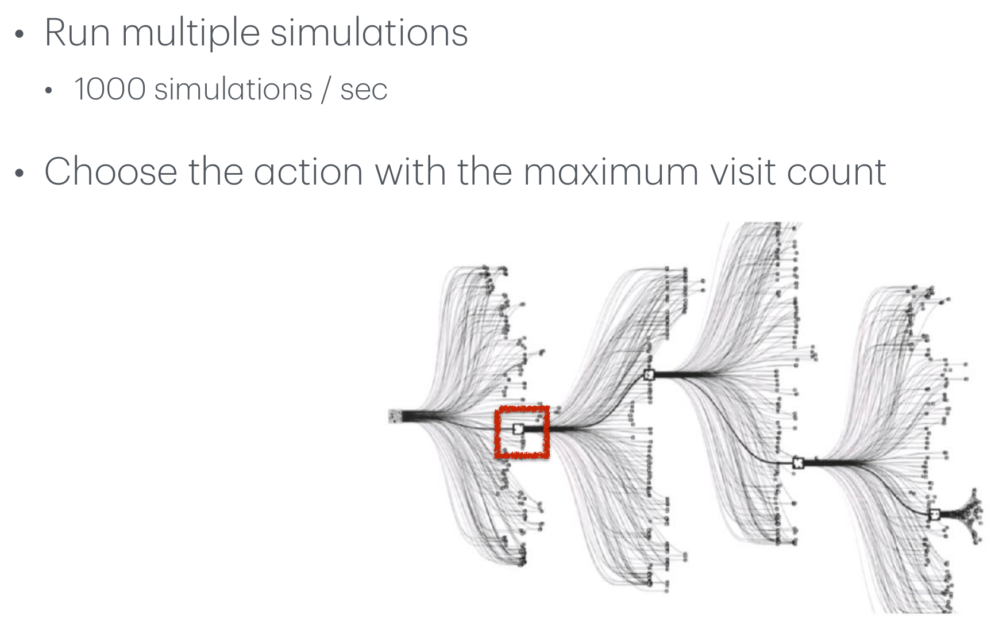
10. 학습 (Training)
지금까지는 정책망 \(p_\sigma\), 롤아웃 정책 \(p_\pi\), 가치망 \(v_\theta\)가 이미 있다고 가정했습니다. 이 절과 11절은 그것들을 어떻게 학습하는지 다룹니다.
10.1 네 개의 신경망
학습 파이프라인 전체를 한 그림으로 보면 다음과 같습니다.
| 신경망 | 슬라이드의 이름 | 탐색에서의 역할 | 학습 방법 | 데이터 |
|---|---|---|---|---|
| \(p_\sigma\) | SL Policy | 트리 정책의 사전 확률 (8.2절) | 지도 학습(분류) | 사람 고수의 국면 |
| \(p_\pi\) | SL Policy | 빠른 롤아웃 정책 (7.2절) | 지도 학습(분류) | 사람 고수의 국면 |
| \(p_\rho\) | RL Policy | \(p_\sigma\)에서 초기화해 자기 대국으로 개선한 정책 | 강화학습 (11절) | 자기 대국 |
| \(v_\theta\) | Value | 잎을 평가하는 가치망 (7절) | 회귀 (11.2절) | 자기 대국의 국면 |
- 노란 화살표: 사람 고수의 국면(Human expert positions)에서 두 개의 SL(지도 학습) 정책을 학습합니다.
- 빨간 화살표 “Initialize”: \(p_\sigma\)의 가중치로 \(p_\rho\)를 초기화합니다.
- 파란 순환 화살표: RL 정책이 자기 대국으로 국면(Self-play positions)을 만들고, RL 정책과 가치망이 그 데이터로 다시 학습합니다(11절).
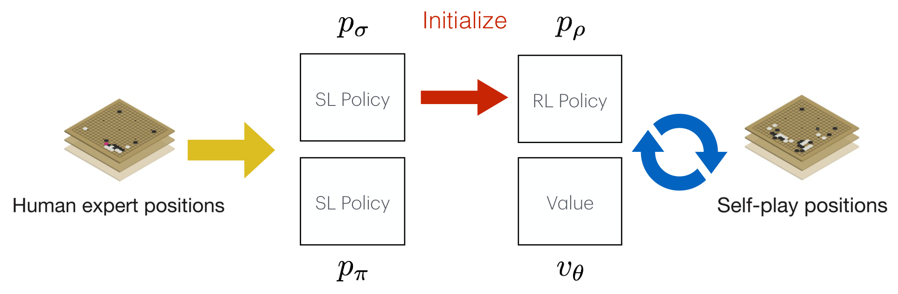
10.2 사전 학습: 분류
다음 슬라이드는 같은 그림에서 왼쪽 절반을 주황 상자 “Pre-training”(사전 학습)으로 묶고, 그 방법을 빨간 글씨 “Classification”(분류)으로 적습니다.
사람 고수의 대국에서 국면 \(s\)와 그 국면에서 실제로 둔 수 \(a^\star\)의 쌍을 모은 데이터 \(\mathcal{D} = \{(s, a^\star)\}\)가 있다고 합시다. 정책망은 361개의 점 가운데 하나를 고르는 분류기이고, 정답 레이블은 \(a^\star\)입니다. 학습 목표는 로그 가능도를 최대화하는 것, 곧 교차 엔트로피를 최소화하는 것입니다.
\[ \mathcal{L}(\sigma) = -\,\mathbb{E}_{(s, a^\star) \sim \mathcal{D}} \big[ \log p_\sigma(a^\star \mid s) \big], \qquad \Delta \sigma \propto \nabla_\sigma \log p_\sigma(a^\star \mid s) \]
이것은 1회차의 행동 복제(behavior cloning)와 같습니다. 고수가 둔 수의 확률을 높이도록 정책을 학습하는 것이고, 강화학습의 보상은 쓰이지 않습니다. 사람의 수를 흉내 내는 정책은 무작위 정책보다 훨씬 좋은 출발점이지만, 그 자체로는 사람 기보가 보여 주는 수준에 묶입니다. 그래서 다음 단계로 자기 대국이 필요합니다.
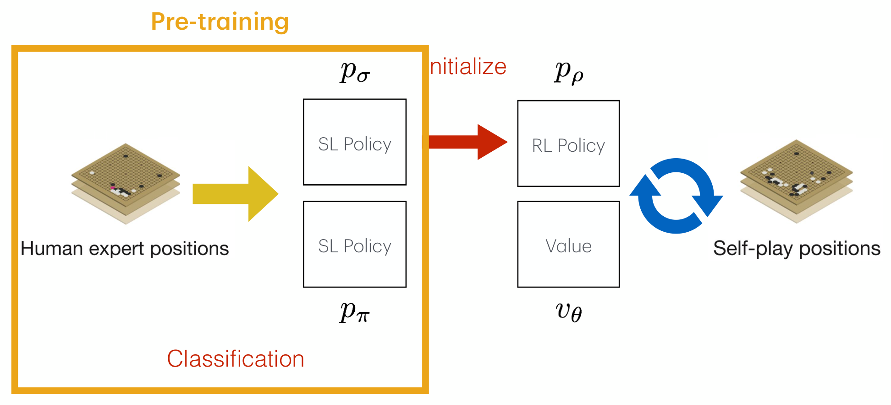
10.3 정책 초기화 (Policy Initialization)
사전 학습의 세부 사항입니다. 트리 정책과 기본 정책을 사람 고수의 데이터로 학습한다.
| 트리 정책 \(p_\sigma\) | 기본 정책 \(p_\pi\) | |
|---|---|---|
| 슬라이드의 설명 | 정확한 정책 | 더 빠른 정책 |
| 수 하나에 걸리는 시간 | 3 ms | 2 μs |
| 게임 끝까지(250수) 두는 시간 | \(250 \times 3\ \text{ms} = 0.75\ \text{초}\) | \(250 \times 2\ \mu\text{s} = 0.5\ \text{ms}\) |
속도 차이는 \(3\ \text{ms} / 2\ \mu\text{s} = 1{,}500\)배입니다. 5.6절의 1 ms와 1 μs는 어림한 숫자였고, 여기서 실제 두 정책의 속도가 나온 셈입니다. 오른쪽 그림에서도 \(p_\pi\)는 얇은 신경망, \(p_\sigma\)는 더 두꺼운 신경망으로 그려져 있습니다.
지도 학습의 규모는 다음과 같습니다.
- 사람 고수 대국에서 뽑은 국면 3천만(30M)개
- GPU 50개로 4주
- 학습에 쓰지 않은 시험 데이터에서 정확도 57%
정확도 57%는 고수가 실제로 둔 수를 361개 가까운 후보 가운데 첫 번째 예측으로 맞힌 비율입니다. 빈 판에서 무작위로 고르면 맞힐 확률이 \(1/361 \approx 0.28\%\)이니, 절반 이상을 맞힌다는 것은 정책망이 고수의 선택을 상당히 잘 흉내 낸다는 뜻입니다.
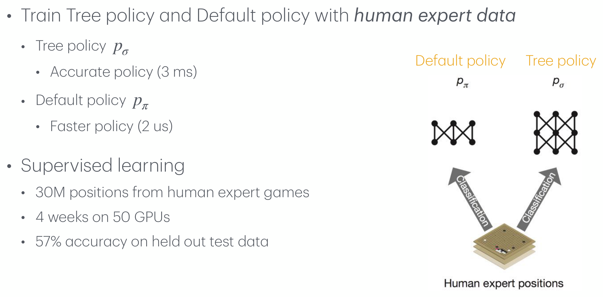
10.4 자기 대국
마지막 슬라이드는 같은 그림의 오른쪽 절반을 주황 상자 “Self-play”로 묶습니다. RL 정책 \(p_\rho\), 가치망 \(v_\theta\), 자기 대국 국면이 상자 안에 있고, 왼쪽의 사전 학습 부분과는 빨간 화살표 “Initialize” 하나로만 이어집니다. 사람 데이터는 출발점을 주는 데까지만 쓰이고, 그 뒤의 개선은 전부 스스로 둔 대국에서 나온다는 뜻입니다. 구체적인 방법이 11절입니다.
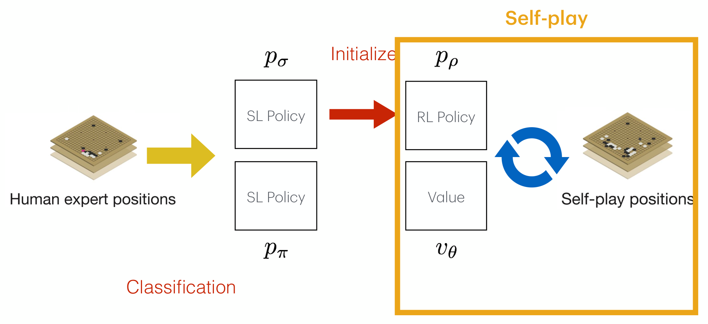
11. 강화학습 (Reinforcement Learning)
11.1 과거의 자신과 두기
네 장의 슬라이드가 같은 그림을 숫자만 바꾸어 보여 줍니다.
| 슬라이드 | 대국 |
|---|---|
| 24쪽 | Policy v1 vs Policy v1 |
| 25쪽 | Policy v1 vs Policy v10 |
| 26쪽 | Policy v1000 vs Policy v1200 |
| 27쪽 | Policy v170000 vs Policy v200000 |
두 정책이 대국을 두면(가운데 아래쪽 화살표) 그 기보가 데이터로 쌓이고, 그 데이터로 정책을 학습합니다(양옆의 곡선 화살표와 “Train”). 학습된 정책이 새 버전이 되어 다시 대국을 둡니다. 숫자의 변화를 읽으면 다음과 같습니다.
- 처음에는 \(p_\sigma\)에서 초기화된 v1이 자기 자신과 둡니다.
- 학습이 진행되면 새 버전(오른쪽, v10 → v1200 → v200000)이 이전 버전(왼쪽, v1 → v1000 → v170000)과 둡니다.
- 상대가 늘 최신 버전인 것은 아니어서, v10은 v1과, v200000은 v170000과 둡니다.
슬라이드는 이유를 적지 않지만, 두 가지 직관을 떠올릴 수 있습니다. 첫째, 상대가 나와 함께 강해집니다. 사람 데이터처럼 수준이 고정된 상대가 아니라 내가 이길수록 강해지는 상대이므로, 학습 내내 적당히 어려운 대국이 공급됩니다. 둘째, 지금의 상대 하나에만 맞춰지는 것을 막습니다. 항상 최신 버전의 자신과만 두면 그 한 상대에게만 통하는 수를 익힐 수 있는데, 여러 시기의 과거 버전과 두면 다양한 상대에 대해 이기는 정책을 배우게 됩니다.
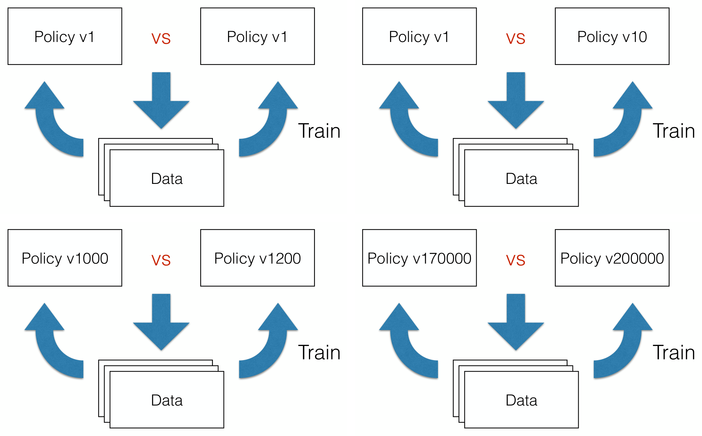
11.2 REINFORCE와 가치 함수 적합
다섯 번째 슬라이드가 학습 방법을 적습니다.
- 자기 대국으로 트리 정책 \(p_\sigma\)와 가치 함수 \(v_\theta\)를 개선한다.
- 시뮬레이션 보상(이기면 +1, 지면 −1)으로 REINFORCE
- 자기 대국의 결과에 가치 함수를 적합
- 강화학습의 규모
- 정책망끼리의 자기 대국 4천만(40M) 판
- GPU 50개로 1주
- 정책: SL 에이전트에게 80% 승리
- 가치: 최초의 강력한 국면 평가 함수
슬라이드는 이 불릿에서 개선 대상을 “트리 정책 \(p_\sigma\)”라고 부르고, 10.1절의 도식은 개선된 정책을 \(p_\sigma\)에서 초기화한 \(p_\rho\)로 그립니다. 같은 신경망이 사전 학습의 가중치에서 출발해 자기 대국으로 계속 학습된다는 뜻으로 읽히며, 이 포스트에서는 도식을 따라 사전 학습만 한 정책을 \(p_\sigma\), 자기 대국으로 개선 중인 정책을 \(p_\rho\)로 구분해 적습니다. 8.2절의 트리 정책 식은 슬라이드대로 \(p_\sigma\)로 적었습니다.
REINFORCE의 유도. 학습 중인 정책 \(p_\rho\)의 목표는 승패의 기댓값을 최대화하는 것입니다.
\[ J(\rho) = \mathbb{E}_{\tau \sim p_\rho} [\, z \,] \]
3회차의 정책 경사 정리에 따르면
\[ \nabla_\rho J(\rho) = \mathbb{E}_{\tau \sim p_\rho} \left[ \sum_{t} \nabla_\rho \log p_\rho(a_t \mid s_t)\, G_t \right] \]
이고, 2.2절에서 보았듯 희소 보상과 \(\gamma = 1\) 아래에서는 모든 시점의 반환값이 그 판의 결과입니다: \(G_t = z_t\). 여기서 \(z_t\)는 시점 \(t\)에 둔 쪽의 관점에서 잰 결과입니다. 슬라이드에는 적혀 있지 않지만, 상대를 학습하지 않는 과거 버전으로 고정한다고 보면 합은 학습 중인 정책이 둔 수들에 대해서만 취하게 됩니다. 한 판에서 얻는 갱신은
\[ \Delta \rho \propto \sum_{t} \nabla_\rho \log p_\rho(a_t \mid s_t)\, z_t \]
입니다. 이긴 판에서는 둔 모든 수의 확률을 올리고, 진 판에서는 모두 내립니다. 10.2절의 행동 복제 갱신 \(\nabla_\sigma \log p_\sigma(a^\star \mid s)\)와 나란히 놓으면 차이가 선명합니다. 정답 레이블 \(a^\star\) 자리에 자기가 둔 수 \(a_t\)가 들어가고, 그 앞에 결과 \(z_t = \pm 1\)이 가중치로 붙습니다. 승패 신호 하나가 한 판에서 학습 중인 쪽이 둔 약 125수(250수의 절반) 모두에 같은 무게로 붙으므로, 어느 수가 승패를 갈랐는지 구분하지 못해 추정의 분산이 큽니다(3회차). 4천만 판이라는 큰 규모도 이 분산과 관련된 것으로 읽힙니다.
가치 함수 적합의 유도. 가치망은 자기 대국에서 나온 국면 \(s\)와 그 판의 결과 \(z\)의 쌍에 회귀합니다.
\[ \mathcal{L}(\theta) = \mathbb{E}_{(s, z)} \Big[ \big( z - v_\theta(s) \big)^2 \Big] \]
이 손실을 최소화하는 함수가 무엇인지는 국면 \(s\) 하나를 고정하고 상수 \(c\)에 대해 \(\mathbb{E}[(z - c)^2 \mid s]\)를 최소화해 보면 알 수 있습니다. \(c\)로 미분하면 \(-2\,\mathbb{E}[z - c \mid s] = 0\)이므로 \(c = \mathbb{E}[z \mid s]\)입니다. 따라서 신경망의 표현력이 충분하면
\[ v_\theta(s) \;\to\; \mathbb{E}[\, z \mid s \,] = V^{p_\rho}(s) = 2\, P(\text{승} \mid s) - 1 \]
이 되어, 가치망은 자기 대국 정책 아래에서의 가치, 곧 승률을 −1과 1 사이로 옮긴 값을 학습합니다. 슬라이드가 이것을 “최초의 강력한 국면 평가 함수”라고 부르는 것은 3절의 둘째 문제, “컴퓨터가 누가 이기고 있는지 평가할 수 없다”에 대한 답이기 때문입니다.
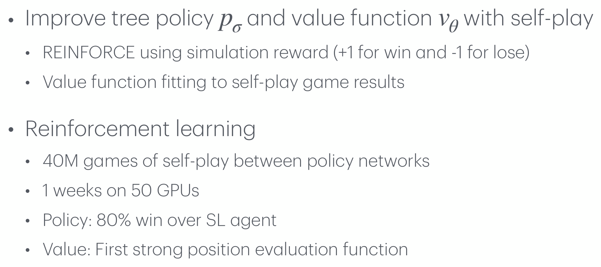
12. 정책망 (Policy Network)
정책망은 합성곱 신경망(CNN)입니다 (출처: Silver et al., Mastering the game of Go with deep neural networks and tree search, 2016). 반상을 19×19 이미지처럼 다룹니다.
| 층 | 연산 | 필터 수 | stride | 활성화 |
|---|---|---|---|---|
| 1 | 5×5 합성곱 | 192 | 1 | ReLU |
| 2–12 | 3×3 합성곱 | 192 | 1 | ReLU |
| 마지막 (13) | 1×1 합성곱 | 1 | 1 | softmax |
그림의 출력 기호가 \(p_{\sigma/\rho}(a \mid s)\)인 것은 SL 정책 \(p_\sigma\)와 RL 정책 \(p_\rho\)가 같은 구조라는 뜻입니다. 10.1절에서 \(p_\rho\)를 \(p_\sigma\)의 가중치로 초기화할 수 있는 것도 구조가 같기 때문입니다.
출력의 모양. 마지막 1×1 합성곱은 필터가 하나이므로 19×19×1, 곧 361개의 값을 내놓습니다. 반상의 점마다 하나의 로짓 \(\ell_a\)가 생기고, softmax가 이를 착점의 확률분포로 바꿉니다.
\[ p(a \mid s) = \frac{\exp(\ell_a)}{\sum_{b} \exp(\ell_b)} \]
마지막 층에서 361개의 값이 나오려면 앞의 층들이 공간 크기를 19×19로 유지해야 하므로, 각 합성곱은 가장자리를 채우는(padding) 방식으로 크기를 보존한다고 읽어야 합니다. 슬라이드는 패딩을 따로 적지 않습니다.
수용 영역. 첫 층의 5×5 합성곱은 출력 한 점이 입력 5×5를 보게 하고, 3×3 합성곱을 하나 더 쌓을 때마다 보는 폭이 2씩 늘어납니다. 2–12층의 3×3 합성곱 11개를 거치면
\[ 5 + 11 \times (3 - 1) = 27 \;\ge\; 19 \]
이므로, 수용 영역의 폭이 반상보다 넓습니다. 다만 수용 영역은 출력 점을 중심으로 양쪽 13칸씩 뻗으므로, 판 한가운데 부근(중앙 9×9)의 출력 점은 반상 전체를 보지만 귀의 점은 14×14 영역만 봅니다. 모든 점이 판 전체를 보려면 폭이 \(2 \times 18 + 1 = 37\) 이상이어야 합니다. 그래도 어느 점이든 판의 절반 이상(\(14 \times 14 = 196\)개 점)을 보므로, 멀리 떨어진 돌의 영향이 한 점의 확률에 반영될 수 있습니다. 가운데 11개 층의 가중치만 세어도 층당 \(3 \times 3 \times 192 \times 192 = 331{,}776\)개, 모두 합해 약 365만 개입니다.
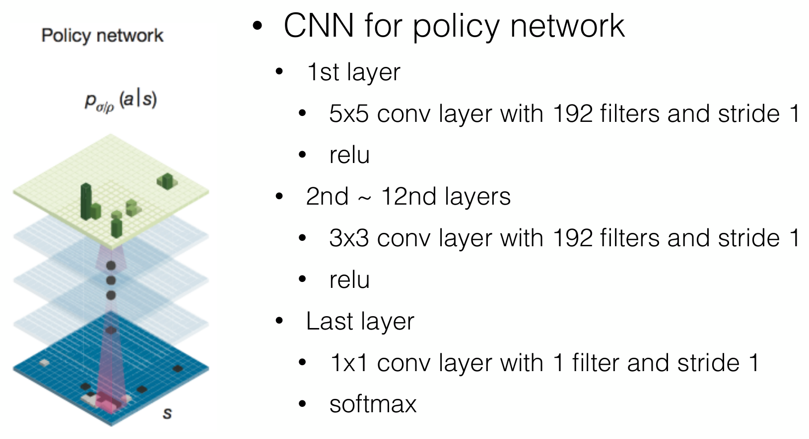
13. 가치망 (Value Network)
가치망도 합성곱 신경망이지만, 출력이 분포가 아니라 숫자 하나입니다.
| 층 | 연산 | 출력 모양 | 활성화 |
|---|---|---|---|
| 1 | 5×5 합성곱, 필터 192개, stride 1 | 19×19×192 | ReLU |
| 2–11 | 3×3 합성곱, 필터 192개, stride 1 | 19×19×192 | ReLU |
| 마지막 ① | 1×1 합성곱, 필터 1개, stride 1 | 19×19×1 (361) | ReLU |
| 마지막 ② | 완전 연결층, 256개 유닛 | 256 | ReLU |
| 마지막 ③ | 완전 연결층, 1개 유닛 | 1 | tanh |
19×19×192의 특징 맵을 1×1 합성곱으로 361개의 값으로 줄인 뒤, 완전 연결층 두 개가 반상 전체를 종합해 하나의 숫자로 만듭니다. 마지막의 tanh는 출력을 −1과 1 사이로 묶습니다. 이 범위는 승패 \(z \in \{+1, -1\}\), 그리고 11.2절에서 가치망이 수렴하는 \(\mathbb{E}[z \mid s] = 2P(\text{승} \mid s) - 1\)의 범위와 정확히 같습니다. 그림의 입력 기호가 \(s'\)인 것은 현재 국면이 아니라 탐색 중에 만난 임의의 국면, 예를 들어 잎 \(s_L\)을 평가한다는 뜻으로 읽힙니다.
두 신경망을 나란히 놓으면 다음과 같습니다.
| 정책망 (12절) | 가치망 (13절) | |
|---|---|---|
| 출력 | 361개 착점의 확률분포 | 숫자 하나 (−1에서 1 사이) |
| 마지막 활성화 | softmax | tanh |
| 3×3 합성곱 층 | 11개 (2–12층) | 10개 (2–11층) |
| 마지막 부분 | 1×1 합성곱 | 1×1 합성곱 + 완전 연결층 2개 |
| 학습 | 분류(10.2절) → REINFORCE(11.2절) | 제곱 오차 회귀(11.2절) |
| 탐색에서의 역할 | 너비 줄이기 (8절) | 깊이 줄이기 (7절) |
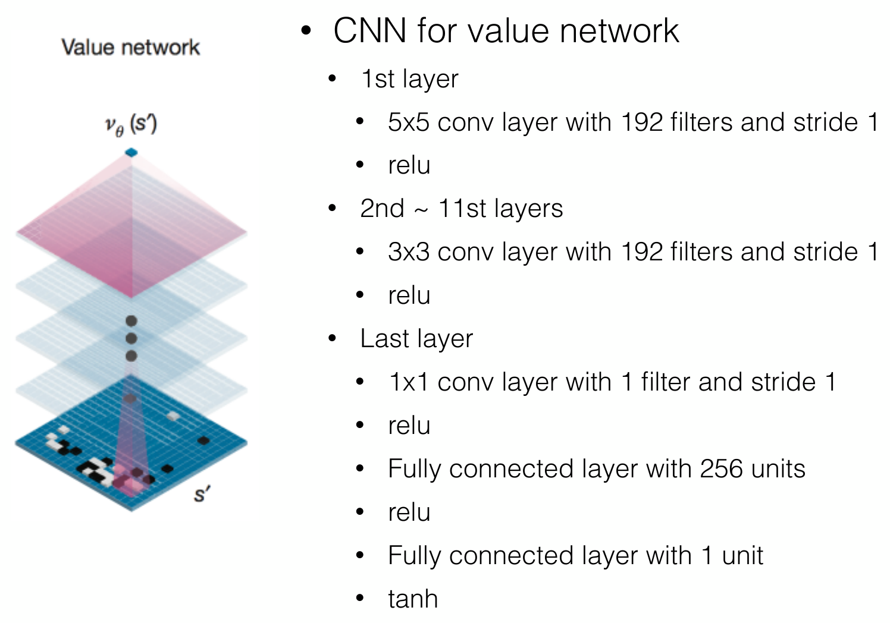
14. 입력 특징 (Input Features (Extensive Domain Knowledge))
정책망과 가치망의 입력은 돌의 배치만이 아닙니다. 슬라이드 제목의 괄호가 말하듯, AlphaGo는 방대한 바둑 지식으로 계산한 특징을 함께 넣습니다.
| 특징 | 평면 수 | 설명 |
|---|---|---|
| Stone colour | 3 | 자기 돌 / 상대 돌 / 빈 점 |
| Ones | 1 | 1로 채운 상수 평면 |
| Turns since | 8 | 그 점에 수가 놓인 지 몇 수가 지났는가 |
| Liberties | 8 | 활로의 수 (이웃한 빈 점의 수) |
| Capture size | 8 | 그 점에 두면 따낼 수 있는 상대 돌의 수 |
| Self-atari size | 8 | 그 점에 두면 잡히게 될 자기 돌의 수 |
| Liberties after move | 8 | 그 점에 둔 뒤의 활로 수 |
| Ladder capture | 1 | 그 점에 두는 수가 축으로 잡기에 성공하는가 |
| Ladder escape | 1 | 그 점에 두는 수가 축에서 성공적으로 빠져나가는가 |
| Sensibleness | 1 | 합법적이면서 자기 눈을 메우지 않는 수인가 |
| Zeros | 1 | 0으로 채운 상수 평면 |
| Player color | 1 | 현재 둘 차례가 흑인가 |
각 특징은 19×19 크기의 평면(plane) 하나 이상으로 표현되고, 평면들을 채널처럼 겹쳐 신경망에 넣습니다. 표에서 Player color를 뺀 11개 특징(슬라이드 표에서는 가로줄 위에 있습니다)의 평면 수를 더하면
\[ 3 + 1 + \underbrace{8 \times 5}_{\text{Turns since} \sim \text{Liberties after move}} + \underbrace{1 \times 4}_{\text{Ladder capture} \sim \text{Zeros}} = 48 \]
이고, 슬라이드 표에서 가로줄 아래에 따로 놓인 Player color 1장을 더하면 슬라이드 아래 상자의 19 × 19 × 49가 됩니다.
표의 몇몇 특징은 바둑 용어를 알아야 읽힙니다.
- 활로(liberty): 돌(또는 이어진 돌 무리)에 이웃한 빈 점입니다. 활로가 모두 막히면 그 돌은 잡힙니다.
- 단수(atari): 활로가 하나만 남아 다음 수에 잡힐 수 있는 상태입니다. Self-atari는 자기 수로 자기 돌을 단수에 빠뜨리는 것입니다.
- 축(ladder): 단수를 계속 이어 가며 상대 돌을 판 끝까지 몰아 잡는 수순입니다. 성패가 판의 먼 곳에 있는 돌에 따라 갈리므로, 신경망이 스스로 알아내기를 기다리지 않고 사람이 미리 계산해 평면으로 넣어 준 것으로 보입니다.
- 눈(eye): 자기 돌로 둘러싸인 빈 점입니다. 자기 눈을 메우면 돌이 살 수 없게 되므로, Sensibleness는 그런 수를 걸러 냅니다.
이 특징들은 모두 바둑 규칙과 전술에 대한 사람의 지식으로 미리 계산한 것입니다. 21절에서 AlphaGo Zero가 이것들을 모두 버린다는 점과 대비됩니다.
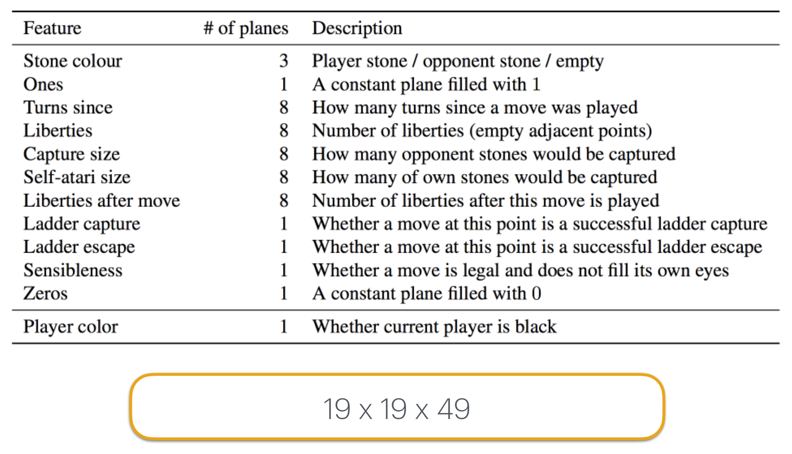
15. 역사 (History)
AlphaGo는 여러 버전을 거쳤고, 앞의 두 버전(Fan, Lee)은 맞붙은 상대의 이름을 땄습니다.
| 시기 | 버전 | 결과 | 상대 |
|---|---|---|---|
| 2015년 10월 | AlphaGo Fan | 5–0 | 판후이(Fan Hui) — 프로 2단, 유럽 챔피언 |
| 2016년 3월 | AlphaGo Lee | 4–1 | 이세돌(Lee Sedol) — 프로 9단, 세계 대회 우승 18회 |
| 2017년 5월 | AlphaGo Master | 3–0 | 커제(Ke Jie) — 프로 9단, 세계 1위 |
| (슬라이드에 시기 없음) | AlphaGo Zero | 89–11 | AlphaGo Master |
앞의 세 줄은 사람과의 대국이고, 마지막 줄만 AlphaGo끼리의 대국입니다. 세계 1위를 3–0으로 이긴 AlphaGo Master를, AlphaGo Zero가 100판 중 89판을 이겨 승률 89%로 압도합니다. 그 차이가 Elo 등급으로 얼마인지는 23절에서 계산합니다. 슬라이드 하단의 출처는 David Silver의 IJCAI 강연 자료입니다. 앞부분의 슬라이드들이 2016년 Nature 논문을 출처로 적은 반면, 다음 절부터의 AlphaGo Zero 슬라이드는 2017년 Nature 논문을 출처로 적습니다.
16. AlphaGo와의 차이 (Difference from AlphaGo)
표지와 같은 형식의 장 구분 슬라이드(33쪽 AlphaGo Zero) 뒤로 강의의 두 번째 부분이 시작됩니다 (출처: Silver et al., Mastering the game of Go without human knowledge, Nature 2017). 첫 슬라이드는 AlphaGo Zero가 AlphaGo와 다른 점을 네 줄로 정리합니다.
- 정책망과 가치망을 하나의 신경망으로 — 더 깊은 신경망(ResNet)
- 사람 고수의 데이터가 없다
- MCTS에 롤아웃이 없다
- 수작업으로 설계한 특징이 없다
앞 절들과 대응시키면 다음과 같습니다.
| 측면 | AlphaGo | AlphaGo Zero |
|---|---|---|
| 신경망 | 정책망(\(p_\sigma\), \(p_\pi\), \(p_\rho\))과 가치망(\(v_\theta\))이 따로 (12–13절) | 정책과 가치를 함께 내는 하나의 더 깊은 잔차 신경망 (17절) |
| 사람 데이터 | 고수의 국면 3천만 개로 사전 학습 (10절) | 없음 — 처음부터 자기 대국 (18절) |
| 잎의 평가 | 가치망과 롤아웃을 \(\lambda\)로 섞음 (7.2절) | 롤아웃 없이 신경망의 가치만 (19–20절) |
| 입력 특징 | 바둑 지식으로 계산한 49장 (14절) | 돌의 위치(8+8장)와 둘 차례의 색(1장)을 담은 17장 (21절) |
네 가지 중 셋은 무언가를 빼는 변화이고, 첫째도 두 신경망을 하나로 합친다는 점에서 덜어 내는 쪽으로 읽을 수 있습니다(다만 신경망 자체는 더 깊어집니다). 사람의 기보와 바둑 지식, 그리고 빠른 롤아웃 정책이 사라지고, 남는 것은 MCTS와 자기 대국과 하나의 신경망입니다.
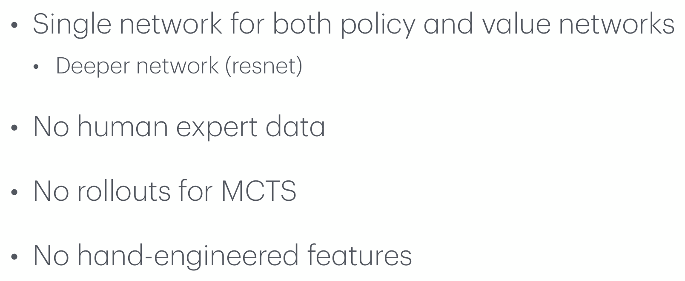
17. 하나의 신경망 (One Neural Network)
- 정책망과 가치망을 하나의 신경망으로
- 효율적인 표현 학습
- 공통의 표현을 갖도록 정칙화
그림에서 반상 \(s_1\)이 하나의 신경망 \(f_\theta\)를 통과해 두 출력 \(\mathbf{p}_1\)(정책)과 \(v_1\)(가치)으로 갈라집니다. 식으로 쓰면
\[ (\mathbf{p}, v) = f_\theta(s) \]
이고, 아래첨자 1은 게임의 첫 시점을 가리키는 것으로 읽힙니다(슬라이드는 설명하지 않습니다). 몸통(trunk)을 공유하고 끝에서 두 개의 머리(head)로 갈라지는 구조입니다.
슬라이드의 두 번째와 세 번째 줄은 이 구조의 이점입니다.
- 효율적인 표현 학습: “어디에 두어야 하는가”와 “누가 이기고 있는가”는 같은 국면 이해 — 어느 돌이 약하고 어느 영역이 확정되었는가 — 를 바탕으로 합니다. 몸통이 그 표현을 한 번 학습하면 두 머리가 함께 씁니다. 탐색에서도 새 잎 하나에 신경망을 한 번만 호출하면 정책과 가치가 함께 나옵니다(20절).
- 공통 표현으로의 정칙화: 몸통의 특징은 두 과제를 동시에 만족해야 하므로, 한 과제에만 맞춘 특징으로 과적합하기 어렵습니다. 여러 과제를 함께 학습하는 것이 정칙화 역할을 하는 것입니다.
이 이점이 실제 성능으로 이어지는지는 22절의 비교 실험이 보여 줍니다.
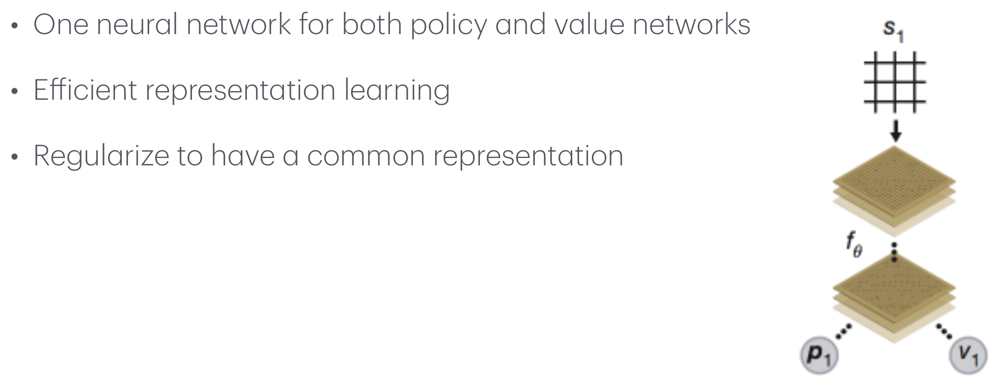
18. 자기 대국으로 배우기 (Learn from Self-Play)
- 처음부터(from scratch) 시작해 자기 대국으로 배운다.
- 사람 데이터도, 바둑 지식도 없다.
그림은 10.1절의 학습 파이프라인을 그대로 가져와, 사람 고수의 국면, 두 SL 정책, “Initialize” 화살표를 모두 흐리게 지웠습니다. 진하게 남은 것은 RL 정책 \(p_\rho\), 가치 \(v_\theta\), 그리고 자기 대국의 순환뿐입니다.
“처음부터”는 무작위로 초기화한 신경망에서 출발한다는 뜻입니다. AlphaGo에서는 사람 기보를 흉내 낸 \(p_\sigma\)가 강화학습의 출발점이었지만(10.2–10.4절), AlphaGo Zero에서는 첫 대국이 거의 무작위 착점이고, 이후의 모든 학습 데이터가 스스로 둔 대국에서 나옵니다. 롤아웃 정책 \(p_\pi\)도 흐리게 지워진 SL 정책 쪽에 있으므로 함께 사라지는데, 이것이 19절의 “롤아웃 없음”과 이어집니다.
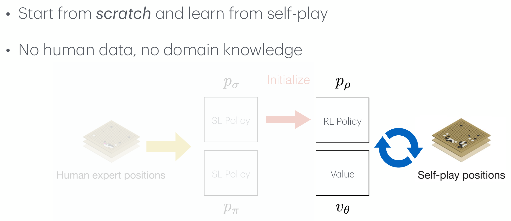
19. 롤아웃 없음 (No Rollouts)
- 국면을 평가하는 데 “롤아웃”을 쓰지 않는다.
- 0.4초에 1,600번의 시뮬레이션
- 국면 평가를 고품질 신경망에 맡긴다.
- 이 가치 함수는 자기 대국의 결과로 학습한다.
7.2절의 식에서 \(\lambda = 0\)으로 둔 경우입니다.
\[ V(s_L) = (1 - 0)\, v_\theta(s_L) + 0 \cdot r = v_\theta(s_L) \]
7.2절의 섞기를 편향–분산의 맞바꿈으로 보면, AlphaGo에서 롤아웃은 가치망의 편향을 덜어 주는 역할로 읽힙니다. 롤아웃을 완전히 뺀다는 것은 신경망의 가치 추정을 그만큼 믿는다는 뜻이고, 슬라이드가 “고품질 신경망에 맡긴다”고 적는 것도 이 때문입니다. 그 가치 함수는 11.2절과 같은 방식, 곧 자기 대국의 결과에 회귀해 학습합니다.
시뮬레이션 속도는 \(1{,}600 / 0.4 = 4{,}000\)번/초로, 9절의 AlphaGo(1,000번/초)보다 빠릅니다. 다만 슬라이드는 두 수치의 하드웨어 조건을 밝히지 않으므로, 이 비교만으로 롤아웃을 뺀 효과를 따로 떼어 말하기는 어렵습니다.
슬라이드는 두 기호를 정의하지 않지만, 그림의 \(\alpha_\theta\)는 신경망 \(f_\theta\)를 쓰는 탐색으로, 탐색의 결과로 나오는 막대그래프 \(\pi\)는 뿌리에서 각 수에 대한 분포로 읽힙니다. 5.8절에서 가장 많이 방문한 수를 고른다고 했으므로, \(\pi\)는 방문 횟수의 분포로 읽을 수 있습니다. 8.2절의 “탐색으로 트리 정책의 결정을 개선한다”를 떠올리면, \(\pi\)는 신경망의 정책 출력 \(\mathbf{p}\)를 탐색으로 개선한 정책입니다.
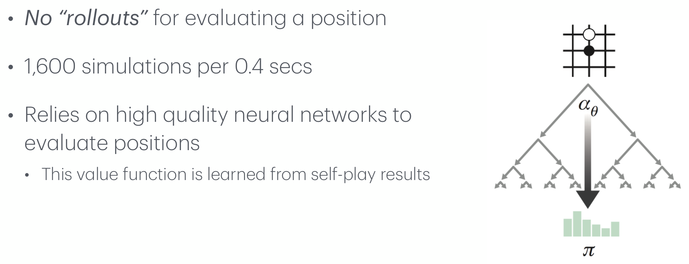
20. AlphaGo Zero의 탐색 (Training)
슬라이드 아래의 한 줄이 이 절의 결론입니다.
Same with AlphaGo, but no rollout for evaluation (AlphaGo와 같지만, 평가에 롤아웃을 쓰지 않는다)
그림은 탐색의 한 번의 반복을 세 단계로 보여 주고, 위의 “Repeat” 화살표가 이를 되풀이한다는 것을 나타냅니다.
| 단계 | 그림 | 5절·8절의 AlphaGo와의 대응 |
|---|---|---|
| a. 선택(Select) | 각 노드에서 \(Q + U\)가 최대(max)인 간선을 따라 내려간다 | 8.2절의 \(Q + p_\sigma / (1 + N)\). 슬라이드는 \(U\)를 정의하지 않지만, 보너스 항의 자리입니다 |
| b. 확장과 평가(Expand and evaluate) | 잎 국면에 \((\mathbf{p}, v) = f_\theta\)를 적용해, 새 간선마다 사전 확률 \(P\)를 달고 잎의 가치 \(V\)를 얻는다 | 5.5절의 확장과 5.6절의 시뮬레이션이 신경망 호출 한 번으로 합쳐짐 |
| c. 역전파(Backup) | 잎의 \(V\)로 경로 위의 \(Q\)를 갱신한다 | 5.7절과 같고, 보상 자리에 \(V = v_\theta(s_L)\)이 들어감 |
역전파의 식은 7.2절의 식에서 \(\lambda = 0\)을 넣은 것입니다.
\[ Q(s, a) = \frac{1}{N(s, a)} \sum_{i=1}^{n} \mathbf{1}(s, a, i)\, v_\theta(s_L^{\,i}) \]
그림 c의 색이 이 식을 보여 줍니다. 초록 상자로 감싼 새 잎의 \(V\)가 바로 위 간선의 초록 \(Q\)를 갱신하고, 분홍 상자 안에 있는 잎들의 \(V\)가 모여 뿌리 쪽 간선의 분홍 \(Q\)가 됩니다. 한 간선의 \(Q\)는 그 아래에서 평가된 잎 가치들의 평균입니다.
슬라이드 제목이 Training인 것은 이 탐색이 학습 과정, 곧 18절의 자기 대국에서 수를 고르는 데 쓰인다는 뜻으로 읽힙니다. 11.2절의 AlphaGo는 자기 대국을 “정책망끼리” 두었다고 적혀 있었다는 점과 대비됩니다.
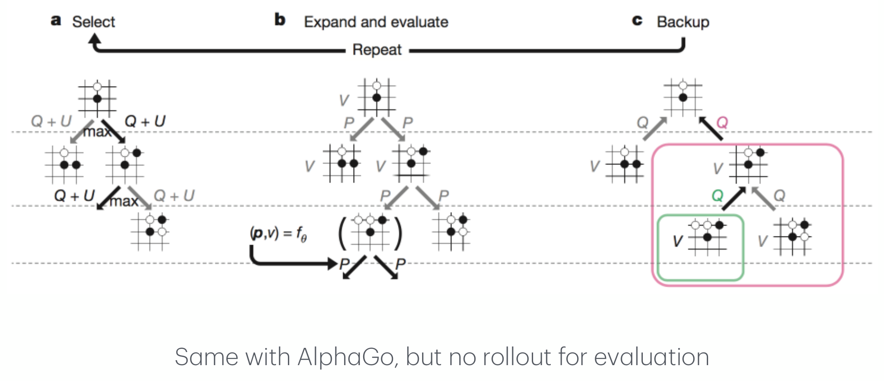
21. 수작업 특징 없음 (No Hand-Engineered Features)
AlphaGo Zero의 입력은 세 가지뿐입니다.
- 자기 돌 마스크 (8 프레임)
- 상대 돌 마스크 (8 프레임)
- 둘 차례의 색 (0 또는 1)
마스크는 그 점에 해당 돌이 있으면 1, 없으면 0인 19×19 평면이고, 프레임은 시점입니다. 현재 국면을 포함한 최근 8개 시점의 반상에서 자기 돌과 상대 돌을 각각 8장씩 담습니다. 합하면
\[ 8 + 8 + 1 = 17 \]
장이고, 입력은 19×19×17입니다. 슬라이드 아래의 상자가 이것을 “49 → 17 feature maps”로 요약합니다.
14절의 표와 비교하면 무엇이 사라졌는지 분명합니다. 활로, 따낼 돌의 수, 자기 단수, 축, 눈 같은 특징은 모두 바둑 규칙과 전술을 아는 사람이 계산 방법을 정해 넣은 것이었습니다. AlphaGo Zero에서는 이런 개념이 필요하다면 신경망이 돌의 배치에서 스스로 배워야 합니다. 14절의 Turns since가 담던 최근 수의 정보는 최근 8 프레임의 이력이 대신하는 것으로 읽힙니다. 슬라이드는 지난 국면을 넣는 이유를 적지 않지만, 수순의 흐름 말고도 패(ko) 규칙을 떠올릴 수 있습니다. 바둑에는 직전 형태의 반복을 금지하는 패 규칙이 있어서, 현재의 돌 배치만으로는 어떤 수가 합법인지 완전히 정해지지 않습니다.
22. 신경망 구조의 효과 (Training)
17절의 “하나의 신경망”과 16절의 “더 깊은 신경망(ResNet)”이 각각 얼마나 기여하는지 비교한 실험입니다. 네 가지 구조의 이름은 두 축을 조합한 것입니다.
- dual / sep: 정책과 가치를 하나의 신경망의 두 머리로 내는가(dual, 17절), 서로 다른 두 신경망으로 내는가(sep, 12–13절)
- res / conv: 잔차 신경망(res)인가, 평범한 합성곱 신경망(conv, 12–13절)인가
빨간 상자가 표시하듯 dual-res가 AlphaGo Zero, sep-conv가 AlphaGo Lee의 구조입니다. 막대그래프를 대략 읽으면 다음과 같습니다.
| 구조 | (a) Elo 등급 | (b) 프로 기보의 수 예측 정확도 | (c) 프로 대국 결과의 MSE |
|---|---|---|---|
| dual-res (AlphaGo Zero) | 약 4,320 | 약 0.507 | 약 0.175 |
| sep-res | 약 3,760 | 약 0.509 | 약 0.181 |
| dual-conv | 약 3,740 | 약 0.490 | 약 0.181 |
| sep-conv (AlphaGo Lee) | 약 3,100 | 약 0.483 | 약 0.191 |
- (a) Elo 등급(높을수록 강함): sep-conv에서 출발해 잔차 신경망으로만 바꾸면(sep-res) 약 660, 하나의 신경망으로만 바꾸면(dual-conv) 약 640이 오르고, 둘을 함께 바꾸면(dual-res) 약 1,220이 오릅니다. 두 변화의 효과가 거의 더해집니다.
- (b) 프로 기보의 수 예측 정확도(높을수록 사람과 비슷함): 잔차 신경망이 합성곱 신경망보다 높지만, dual과 sep의 차이는 작고 오히려 sep-res가 dual-res보다 조금 높습니다. dual-res의 Elo가 가장 높은 이유가 사람의 수를 더 잘 흉내 내서는 아니라는 뜻입니다.
- (c) 프로 대국 결과의 MSE(낮을수록 가치 예측이 정확함): dual-res가 가장 낮고 sep-conv가 가장 높습니다. 두 변화 모두 가치 예측을 정확하게 만듭니다.
(b)와 (c)는 사람의 기보로 잰 지표입니다. 슬라이드는 네 구조를 어떤 데이터로, 어떤 조건에서 학습했는지 적지 않으므로, 이 그래프만으로 각 구조가 사람 데이터 없이 학습되었는지는 알 수 없습니다.
(a)의 세로축은 2,500, (b)는 0.45, (c)는 0.15에서 시작합니다. 그래서 막대 길이의 비율이 값의 비율과 다릅니다. 예를 들어 (a)에서 dual-res의 막대는 sep-conv의 막대보다 세 배 가까이 길어 보이지만, Elo의 비는 1.4배 정도입니다. 또 (b)의 축 이름은 “(%)”이지만 눈금은 0.45–0.53의 비율로 적혀 있어, 45–53%로 읽어야 합니다.
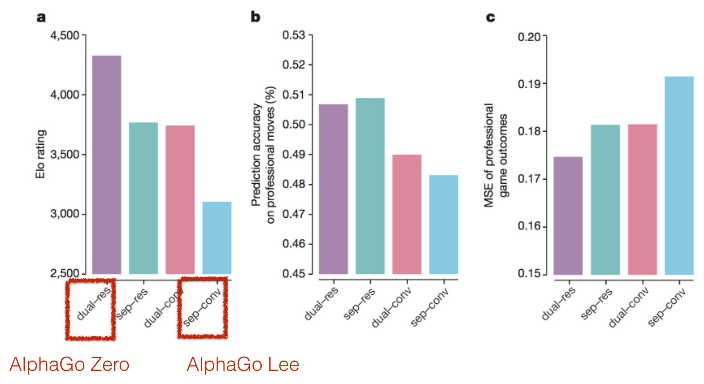
23. AlphaGo Zero의 실력 (AlphaGo Zero)
마지막 결과 슬라이드는 Elo 등급 그래프 한 장과 한 문장입니다.
AlphaGo Master: same algorithm and architecture, but using human data and features (AlphaGo Master: 같은 알고리즘과 구조이지만, 사람 데이터와 특징을 쓴다)
그래프의 세로축은 Elo 등급(−2,000–5,000), 가로축은 0–40의 눈금만 있고 이름이 적혀 있지 않습니다. 범례는 세 가지입니다.
- AlphaGo Zero 40 blocks (파란 실선)
- AlphaGo Lee (초록 점선) — 약 3,470
- AlphaGo Master (남색 점선) — 약 4,720
PDF에는 두 점선만 그려져 있고, 범례에 있는 AlphaGo Zero의 실선은 나타나지 않습니다. 강의에서는 애니메이션으로 곡선이 그려졌을 것으로 보이며, 이 포스트에서는 그 곡선을 읽을 수 없습니다. 범례의 “40 blocks”도 슬라이드에 설명이 없는데, 16절의 ResNet을 생각하면 잔차 블록 40개짜리 신경망으로 읽힙니다.
사람 데이터는 필요한가. 슬라이드의 문장에 따르면 AlphaGo Master와 AlphaGo Zero의 차이는 사람 데이터와 수작업 특징의 유무뿐입니다. 그런데 15절에서 AlphaGo Zero가 Master를 89–11로 이겼습니다. 같은 알고리즘과 구조라면, 사람의 데이터와 지식을 뺀 쪽이 더 강하다는 것이 AlphaGo Zero 부분의 결론입니다.
89승 11패는 Elo로 얼마인가. Elo 등급의 표준 정의에서, 등급 차이가 \(\Delta\)인 두 선수의 기대 승률은
\[ E = \frac{1}{1 + 10^{-\Delta / 400}} \]
입니다. 이를 \(\Delta\)에 대해 풀면
\[ \Delta = 400 \log_{10} \frac{E}{1 - E} \]
이고, \(E = 0.89\)를 넣으면 \(\Delta = 400 \log_{10} (0.89 / 0.11) \approx 400 \times 0.908 \approx 363\)입니다. 89%의 승률은 약 360의 등급 차이에 해당하고, 그래프의 Master(약 4,720)에 더하면 AlphaGo Zero는 약 5,080, 곧 5,100 가까이에 있다는 계산이 됩니다. 같은 식으로 그래프의 Lee와 Master의 차이 약 1,250을 넣으면 Lee가 Master를 이길 기대 승률은 \(1 / (1 + 10^{1250/400}) = 1 / (1 + 10^{3.125}) \approx 0.07\%\)입니다. 15절에서 이세돌 9단에게 4–1로 이긴 AlphaGo Lee가, 그 뒤의 버전들에게는 거의 이길 수 없는 상대라는 뜻입니다.
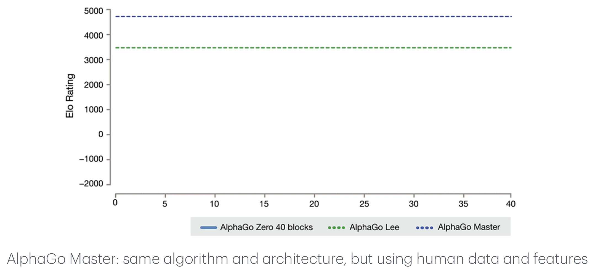
24. 요약 (Summary)
마지막 슬라이드는 강의 전체를 네 줄로 요약합니다.
- 완벽한 모형(예: 바둑 규칙)이 미리 내다보기를 가능하게 하고, 학습된 모델이 그 탐색을 다룰 수 있게 만든다. (3절, 7–8절) — 앞의 “모형”은 환경의 동역학, 곧 바둑 규칙이고, 뒤의 “모델”은 정책망과 가치망 같은 신경망입니다. 이 시리즈의 용어대로 두 말을 구분했습니다.
- MCTS: 주어진 상태에서 \(N\)번의 시뮬레이션으로 가장 좋은 행동을 찾는다. (5절)
- \(N\)번의 선택 → 확장 → 평가 → 역전파를 통해, MCTS는 게임 통계(방문 횟수, Q 값)를 담은 트리를 만든다.
- MCTS는 더 그럴듯한 노드를 더 자주 방문한다 → 가장 많이 방문한 행동을 고른다. (8.2절, 9절)
- AlphaGo는 고수의 데이터로 배우고 자기 대국으로 개선한다. (10–11절) 슬라이드의 “form self-play”는 “from self-play”의 오타로 보입니다.
- 탐색의 너비 줄이기: 정책망이 유망한 행동에 우선순위를 준다. (8절)
- 탐색의 깊이 줄이기: 가치망이 잎 상태를 평가한다. (7절)
- AlphaGo Zero: 하나의 깊은 정책–가치 신경망, 롤아웃 없음, 고수 데이터 없음, 수작업 특징 없음. (16–23절)
요약 슬라이드는 네 단계의 셋째를 “시뮬레이션”이 아니라 “평가(evaluate)”라고 부릅니다. 롤아웃으로 게임 끝까지 두든(5.6절), 가치망과 섞든(7.2절), 신경망만 쓰든(19–20절), 그 단계가 하는 일은 결국 잎 상태를 평가하는 것이라는 점을 드러내는 표현입니다.
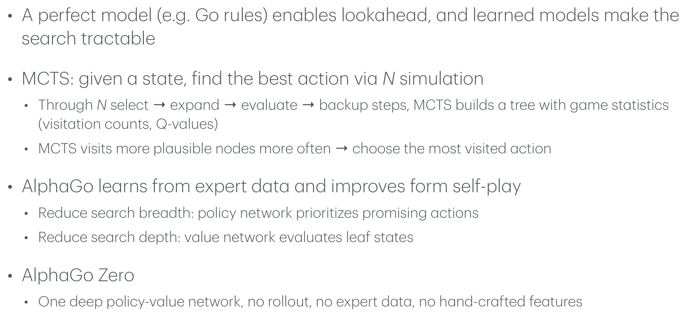
정리하며 (Closing Remarks)
이번 강의의 논리 사슬을 한 장으로 요약하면 다음과 같습니다.
| 단계 | 내용 | 근거 |
|---|---|---|
| ① 문제의 크기 | 바둑은 국면 \(10^{170}\)개, 분기 계수 최대 361, 깊이 약 250, 승패뿐인 보상, 한 수 몇 분의 시간 제약을 가진다. 희소 보상 아래에서 가치는 \(2P(\text{승}) - 1\)이다 | 1–2절 |
| ② 완벽한 모형과 그 한계 | 바둑 규칙은 오차 없는 모형이라 계획이 원리적으로 가능하지만, 탐색 공간이 거대하고 중간 국면을 평가할 수 없어 무차별 대입은 불가능하다 | 3절 |
| ③ 표본 추출 | 순수 MCTS는 무작위 시뮬레이션의 승률로 수를 평가하지만, 예산을 고르게 쓰고 무작위 대국의 승률을 잰다는 약점이 있다 | 4절 |
| ④ MCTS | 선택 → 확장 → 시뮬레이션 → 역전파를 \(N\)번 반복하며 간선마다 \(N(s,a)\)와 \(Q(s,a)\)를 증분 평균으로 쌓고, 가장 많이 방문한 수를 고른다. 트리 안은 느리고 좋은 정책, 트리 밖은 빠르고 덜 좋은 정책이 맡는다 | 5절 |
| ⑤ 깊이 줄이기 | 잎을 가치망 \(v_\theta\)와 롤아웃 결과 \(r\)을 \(\lambda\)로 섞어 평가해, 롤아웃의 분산과 가치망의 편향을 맞바꾼다 | 6–7절 |
| ⑥ 너비 줄이기 | 트리 정책 \(Q + p_\sigma / (1 + N)\)은 처음에 정책망을 따르고, \(Q\)가 같으면 방문을 사전 확률에 비례해 나누며, 결국 \(Q\)로 결정을 고친다. MCTS는 탐색으로 정책의 결정을 개선하는 연산이다 | 8절 |
| ⑦ 테스트 시점 | 초당 1,000번의 시뮬레이션 뒤 방문 횟수가 가장 큰 수를 둔다 | 9절 |
| ⑧ 사전 학습 | 고수의 국면 3천만 개로 정확한 \(p_\sigma\)(3 ms)와 빠른 \(p_\pi\)(2 μs)를 분류, 곧 행동 복제로 학습한다 | 10절 |
| ⑨ 자기 대국 강화학습 | \(p_\sigma\)에서 초기화한 정책이 과거의 자신과 두며 승패 \(z\)를 가중치로 한 REINFORCE로 개선되고, 가치망은 자기 대국의 결과에 회귀해 \(\mathbb{E}[z \mid s]\)를 학습한다 | 11절 |
| ⑩ 신경망과 입력 | 정책망은 softmax로 361개 착점의 분포를, 가치망은 tanh로 −1과 1 사이의 숫자를 내는 CNN이며, 입력은 바둑 지식으로 계산한 49장의 평면이다 | 12–14절 |
| ⑪ 역사 | Fan(5–0), Lee(4–1), Master(3–0)를 거쳐 AlphaGo Zero가 Master를 89–11로 이긴다 | 15절 |
| ⑫ 덜어 내기 | AlphaGo Zero는 정책과 가치를 하나의 잔차 신경망으로 합치고, 사람 데이터 없이 처음부터 자기 대국으로 배우며, 롤아웃 없이(\(\lambda = 0\)) 신경망으로 잎을 평가하고, 입력을 돌의 위치와 둘 차례의 색, 17장으로 줄인다 | 16–21절 |
| ⑬ 결과 | 잔차 구조와 하나의 신경망은 각각 Elo를 약 660, 약 640 올리고 함께 약 1,220을 올린다. 같은 알고리즘과 구조에 사람 데이터와 수작업 특징을 더한 Master를, 둘 다 없는 AlphaGo Zero가 89–11로 이기며 이는 약 360 Elo의 차이다 | 22–23절 |